<!doctype html>
<html lang="en">
<head>
  <meta charset="utf-8">
  <meta name="viewport" content="width=device-width, initial-scale=1">
  <title>arxiv digest — 2026-10-21</title>
  <style>
:root {
  --bg: #ffffff;
  --fg: #1f2328;
  --muted: #59636e;
  --border: #d0d7de;
  --card: #f6f8fa;
  --link: #0969da;
}
body {
  max-width: 980px;
  margin: 0 auto;
  padding: 2rem 1rem 5rem;
  font-family: -apple-system, BlinkMacSystemFont, "Segoe UI", Helvetica, Arial, sans-serif;
  line-height: 1.55;
  color: var(--fg);
  background: var(--bg);
}
a { color: var(--link); }
img { max-width: 100%; height: auto; }
pre, code { background: var(--card); border-radius: 6px; }
pre { padding: 1rem; overflow-x: auto; }
blockquote { border-left: 4px solid var(--border); padding-left: 1rem; color: var(--muted); }
details { margin: 0.6rem 0; }
summary { cursor: pointer; font-weight: 600; }
.paper-figures-scroll {
  display: flex;
  gap: 1rem;
  overflow-x: auto;
  overscroll-behavior-x: contain;
  padding: 0.75rem 0.25rem 1rem;
  margin: 1rem 0 1.25rem;
  border-top: 1px solid var(--border);
  border-bottom: 1px solid var(--border);
  scroll-snap-type: x proximity;
}
.paper-figure-card {
  flex: 0 0 min(260px, 72vw);
  scroll-snap-align: start;
  background: var(--card);
  border: 1px solid var(--border);
  border-radius: 12px;
  padding: 0.55rem;
}
.paper-figure-card img {
  display: block;
  width: 100%;
  max-height: 240px;
  object-fit: contain;
  background: white;
  border-radius: 8px;
}
.paper-figure-caption {
  display: block;
  margin-top: 0.5rem;
  color: var(--muted);
  font-size: 0.85rem;
}
.figure-strip-hint {
  color: var(--muted);
  font-size: 0.9rem;
  margin-bottom: -0.3rem;
}
</style>
  <script>
    window.MathJax = {
      tex: {
        inlineMath: [['$', '$'], ['\\(', '\\)']],
        displayMath: [['$$', '$$'], ['\\[', '\\]']],
        processEscapes: true,
        processEnvironments: true
      },
      options: {
        skipHtmlTags: ['script', 'noscript', 'style', 'textarea', 'pre', 'code'],
        ignoreHtmlClass: 'tex2jax_ignore',
        processHtmlClass: 'tex2jax_process'
      }
    };
  </script>
  <script id="MathJax-script" async
    src="https://cdn.jsdelivr.net/npm/mathjax@3/es5/tex-chtml.js"></script>
</head>
<body>
<header style="background-color: #333; color: white; padding: 15px; margin-bottom: 20px;">
  <h1 style="margin: 0; font-size: 24px;">
    <a href="https://ochelpan.github.io/arXiv_clean/" style="color: white; text-decoration: none;">Main</a>
  </h1>
</header>

<h1>Daily arXiv Report</h1>

<hr>
<p>
<a href="index.html">← Index</a>
 · <a href="papers_09.html">← Previous</a> · <a href="papers_11.html">Next →</a>
</p>
<hr>

<h2>Papers 181–200</h2>
<p><a id="paper-2610.26638"></a></p>
<h3 id="nucleation-type-criticality-with-infinite-number-of-free-energy-minima-beyond-mean-field-theory"><a href="http://arxiv.org/abs/2610.26638v1">Nucleation-type criticality with infinite number of free-energy minima beyond mean-field theory</a></h3>
<p><strong>Authors:</strong> Jun Takahashi, Yoshihiko Nishikawa<br>
<strong>Type:</strong> theory · <strong>Category:</strong> statistical mechanics · <strong>PDF:</strong> <a href="https://arxiv.org/pdf/2610.26638v1">https://arxiv.org/pdf/2610.26638v1</a><br>
<strong>Analysis basis:</strong> full PDF text, analyzed in chunks</p>
<div class="figure-strip-hint">↔ Scroll figures horizontally</div>
<div class="paper-figures-scroll">
<figure class="paper-figure-card">
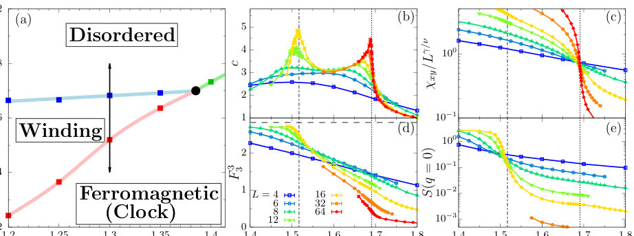
<figcaption class="paper-figure-caption"><b>Fig 1.</b> FIG. 1. (a) Phase diagram of the model, (b) specific heat c, (c) scaled single-layer magnetic susceptibility χxy/Lγ/ν, (d) Z3 symmetry parameter F 3 3 , and (e) structure factor at q = 0, as functions of temperature at J∥/J = 1.3. The scaling exponent γ/ν for χxy in (c) is set to the XY -universality value 1.962 [30]. The dashed line in (d) indicates 2 √</figcaption>
</figure>
<figure class="paper-figure-card">
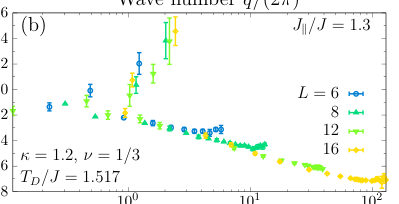
<figcaption class="paper-figure-caption"><b>Fig 2.</b> FIG. 2. (a) Structure factor of the system with L = 16 at J∥/J = 1.3, near the Dzyaloshinskii transition temperature TD. The peak position smoothly approaches q = 0 with de- creasing temperature. (b) Finite-size scaling plot of the wind- ing distance ξw, with κ = 1.2, ν = 1/3, and TD = 1.517.</figcaption>
</figure>
<figure class="paper-figure-card">
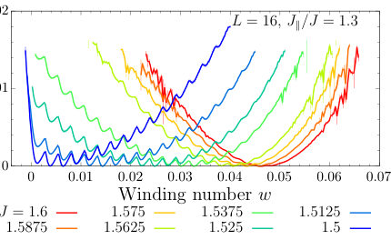
<figcaption class="paper-figure-caption"><b>Fig 3.</b> FIG. 3. Free energy f(w) as a function of the winding number w at J∥/J = 1.3. All the curves are vertically shifted so that their minimum values are 0. The system size L = 16 and Lz = 128. At low temperatures, f(w) has multiple local minima, each corresponding to a distinct winding state.</figcaption>
</figure>
<figure class="paper-figure-card">
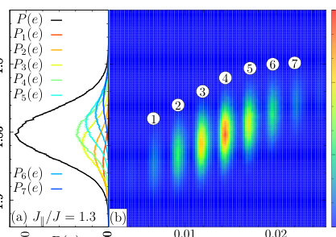
<figcaption class="paper-figure-caption"><b>Fig 4.</b> FIG. 4. (a) Probability distribution of the energy density P(e) and (b) joint distribution P(w, e) of the winding number w and the energy density e for the L = 16 system at T/J = 1.5125. The joint distribution has 7 visible peaks with distinct statistical weights. The energy distribution P(e) is a mixture of the distribution Pi(e) for i-th peak (i = 1, · · · , 7).</figcaption>
</figure>
<figure class="paper-figure-card">
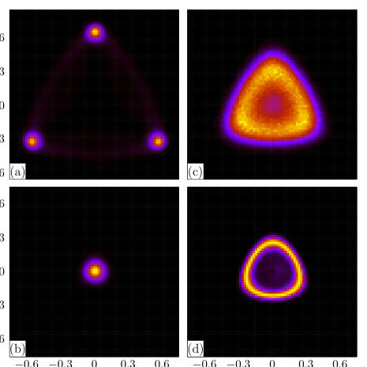
<figcaption class="paper-figure-caption"><b>Fig 5.</b> FIG. 5. Probability distribution of single-layer magnetiza- tion P(mx, my) at (a) (L, T/J) = (16, 1.503) (ferromagnetic phase), (b) (64, 1.7) (paramagnetic phase), (c) (16, 1.675) (winding phase), (d) (64, 1.675) (winding phase).</figcaption>
</figure>
</div>
<p><strong>Summary.</strong> This work analyzes a 3D Heisenberg model with DM interaction to study anomalous critical points. The authors show that the transition can be driven by an infinite number of free-energy minima, leading to critical exponents mimicking first-order behavior while remaining continuous. This unifies theoretical predictions for nucleation-type transitions in microscopic quantum magnets.</p>
<p><strong>Why it may be interesting.</strong> The concept of criticality arising from an infinite number of local minima in the free energy is a powerful generalization of standard mean-field descriptions, relevant for understanding complex phase transitions in many-body systems.</p>
<details>
<summary>Detailed structure</summary>
<p><strong>Main problem.</strong> The paper investigates anomalous critical phase transitions in magnetic models, specifically those exhibiting 'nucleation-type criticality' where infinite free-energy minima drive the transition.</p>
<p><strong>Main result.</strong> The study demonstrates that such anomalous criticality, characterized by first-order-like exponents while maintaining physical continuity, can be realized in microscopic models beyond mean-field theory.</p>
<p><strong>Method.</strong> The research employs extensive numerical simulations, including Monte Carlo methods (Metropolis, overrelaxation) and the multicanonical method, to calculate free energy landscapes and critical exponents.</p>
<p><strong>Model / system.</strong> The system is a three-dimensional Heisenberg model incorporating Dzyaloshinskii–Moriya (DM) interaction and Potts-like anisotropy, exhibiting transitions between disordered, winding, and ferromagnetic phases.</p>
<p><strong>Key observables.</strong> Specific heat ($c$), scaled single-layer magnetic susceptibility ($\chi_{xy}$), $Z_3$ symmetry parameter ($F_3$), and the free energy $f(w)$ as a function of winding number $w$.</p>
<p><strong>Important parameters / regimes.</strong> The ratio $J_\parallel/J$ controls the nature of the transition, and the system is studied near the Dzyaloshinskii transition temperature ($T_D$).</p>
<p><strong>Assumptions / limitations.</strong> The analysis relies on the ability to map the critical behavior to the emergence of multiple, locally stable winding states in the free energy landscape.</p>
<p><strong>Figures summary.</strong> Figures illustrate the phase diagram, specific heat, susceptibility, and the structure factor $S(q)$ across different temperature regimes, showing evidence of both continuous and first-order transitions.</p>
<p><strong>Paper structure.</strong> The paper systematically analyzes the phase diagram, first establishing the model Hamiltonian and simulation techniques, then focusing on the critical behavior by analyzing symmetry parameters and the free energy landscape associated with winding numbers.</p>
</details>
<details>
<summary>Abstract</summary>
<p>We study the phase diagram of a three-dimensional Heisenberg model with Dzyaloshinski--Moriya interaction under the presence of Potts-like anisotropy. The phase transition between the winding phase and the ferromagnetically ordered phase exhibits a critical phase transition with anomalous features such as critical exponents consistent with that of a first-order transition while maintaining continuity of physical quantities. Furthermore, at the critical point, we see a growing number of free energy local minima, supporting the picture of infinitely many discontinuous transitions forming criticality. Our numerical result unify de Gennes' theory of nucleation-type transitions and Dzyaloshinskii's calculation of chiral magnets by demonstrating that such anomalous criticality can be realized in microscopic models beyond mean-field.</p>
</details>
<p><sub><a href="#top">↑ back to top</a></sub></p>

<p><a id="paper-2610.25138"></a></p>
<h3 id="on-the-complexity-of-level-synchronized-tree-automata-for-quantum-circuit-verification"><a href="http://arxiv.org/abs/2610.25138v1">On the Complexity of Level-Synchronized Tree Automata for Quantum Circuit Verification</a></h3>
<p><strong>Authors:</strong> Michael Blondin, Samy Chady Khoumsi-Kasmi, Guillermo A. Pérez, Marnix Suilen<br>
<strong>Type:</strong> theory · <strong>Category:</strong> quantum information and computing · <strong>PDF:</strong> <a href="https://arxiv.org/pdf/2610.25138v1">https://arxiv.org/pdf/2610.25138v1</a><br>
<strong>Analysis basis:</strong> full PDF text, analyzed in chunks</p>
<div class="figure-strip-hint">↔ Scroll figures horizontally</div>
<div class="paper-figures-scroll">
<figure class="paper-figure-card">
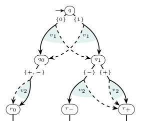
<figcaption class="paper-figure-caption"><b>Fig 1.</b> Fig. 2: Two examples of LSTAs. Left: A singleton LSTA A1 recognizing |++⟩. Right: An LSTA A2 recognizing {|0+⟩, |0−⟩, |1+⟩, |1−⟩}.</figcaption>
</figure>
<figure class="paper-figure-card">
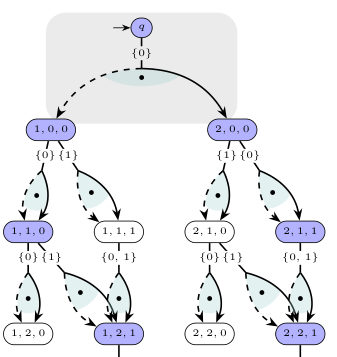
<figcaption class="paper-figure-caption"><b>Fig 2.</b> Fig. 3: LSTA being non empty iff the for- mula (x1 ∨x2)∧(¬x1 ∨x2) is satisfiable.</figcaption>
</figure>
<figure class="paper-figure-card">
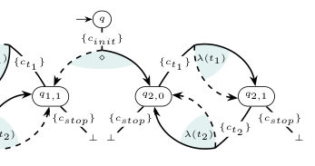
<figcaption class="paper-figure-caption"><b>Fig 3.</b> Fig. 4: The LSTA AN,d (right) obtained from a labeled 1-safe Petri net N (left).</figcaption>
</figure>
<figure class="paper-figure-card">
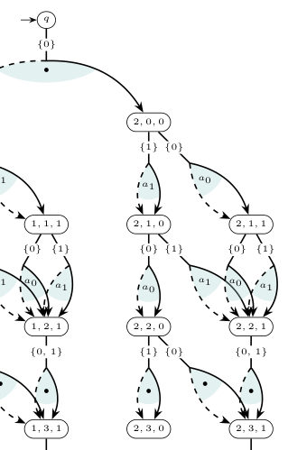
<figcaption class="paper-figure-caption"><b>Fig 4.</b> Fig. 5: LSTAs A (left) and B (right) such that L(A) ⊆L(B) if and only if it is the case that ∀x1, x2 ∃y1 (x1 ∨x2 ∨y1) ∧(¬x1 ∨x2 ∨¬y1).</figcaption>
</figure>
<figure class="paper-figure-card">
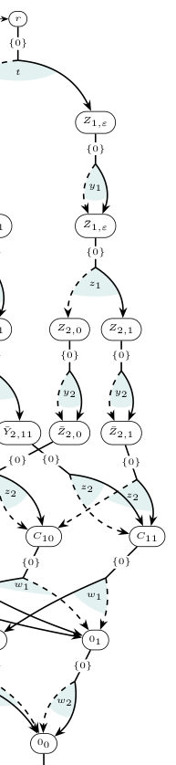
<figcaption class="paper-figure-caption"><b>Fig 5.</b> Fig. 6: The selector LSTA A2 for k = 2, representing T πsel f . States Yi,u and Zi,u remember prefixes u of y and z, respectively, before yi; barred states do so before zi. State Cu represents the residual λEu on the remaining w bits, with Cε written C, and 0j represents the zero residual with j bits remaining.</figcaption>
</figure>
</div>
<p><strong>Summary.</strong> This paper investigates the theoretical complexity of using Level-Synchronized Tree Automata (LSTAs) for quantum circuit verification. It proves that key decision problems associated with these automata range from NP-complete to EXPSPACE-complete. The results clarify the inherent computational limits and structural growth rates when applying automata theory to quantum state representation.</p>
<p><strong>Why it may be interesting.</strong> This work provides rigorous theoretical tools to determine the computational feasibility of verifying complex quantum circuits, which is crucial for scaling up quantum computation.</p>
<details>
<summary>Detailed structure</summary>
<p><strong>Main problem.</strong> The paper analyzes the computational complexity of using Level-Synchronized Tree Automata (LSTAs) to verify quantum circuits.</p>
<p><strong>Main result.</strong> It establishes that the nonemptiness problem for acyclic LSTAs is NP-complete, while general language inclusion is EXPSPACE-complete.</p>
<p><strong>Method.</strong> The authors use automata theory, complexity theory reductions (e.g., from satisfiability problems), and structural analysis of gate operations to bound the complexity of LSTA properties.</p>
<p><strong>Model / system.</strong> The model involves representing sets of quantum states using LSTAs, which are defined over perfect binary trees corresponding to $n$-qubit systems. Verification requires transforming the automaton for each quantum gate.</p>
<p><strong>Key observables.</strong> The complexity class of the decision problems (e.g., NP-complete, EXPSPACE-complete) for LSTA properties like nonemptiness and language inclusion.</p>
<p><strong>Important parameters / regimes.</strong> The size of the automaton ($|A|$), the forward-memory width ($   ext{fmw}_\pi(B)$), and the qubit order permutation ($\pi$).</p>
<p><strong>Assumptions / limitations.</strong> The analysis relies on the structure of LSTAs, specifically assuming perfect binary trees for state representation, and uses techniques like block compilation and adjoints for circuit analysis.</p>
<p><strong>Figures summary.</strong> Figures illustrate quantum states as perfect binary trees, provide examples of LSTAs recognizing specific states, and show the structure of LSTAs used in complexity proofs.</p>
<p><strong>Paper structure.</strong> The paper progresses from defining LSTAs for quantum states, establishing complexity bounds for basic properties (nonemptiness, inclusion), and then developing advanced techniques involving forward-memory width and scheduling heuristics for practical circuit verification.</p>
</details>
<details>
<summary>Abstract</summary>
<p>Reliable quantum computation requires methods for verifying quantum circuits. Level-synchronized tree automata (LSTAs) were recently introduced to represent sets of quantum states for this purpose. We study LSTAs along two axes relevant to verification: the complexity of their decision problems and the size of their representations under circuit operations. We prove that acyclic LSTAs have NP-complete nonemptiness and $Π_2^P$-complete language inclusion, and that general language inclusion is EXPSPACE-complete. We further prove inherent quadratic representation growth under individual quantum gates in a fixed qubit order, and give an adjacent-qubit reordering construction that preserves level synchronization. These results clarify the scope of applicability of the automata-theoretic toolbox for quantum circuit verification.</p>
</details>
<p><sub><a href="#top">↑ back to top</a></sub></p>

<p><a id="paper-2610.25875"></a></p>
<h3 id="online-scheduling-and-distribution-of-quantum-circuits-over-quantum-networks"><a href="http://arxiv.org/abs/2610.25875v1">Online Scheduling and Distribution of Quantum Circuits over Quantum Networks</a></h3>
<p><strong>Authors:</strong> Yukun Yang, Himanshu Gupta<br>
<strong>Type:</strong> theory · <strong>Category:</strong> quantum information and computing · <strong>PDF:</strong> <a href="https://arxiv.org/pdf/2610.25875v1">https://arxiv.org/pdf/2610.25875v1</a><br>
<strong>Analysis basis:</strong> full PDF text, analyzed in chunks</p>
<div class="figure-strip-hint">↔ Scroll figures horizontally</div>
<div class="paper-figures-scroll">
<figure class="paper-figure-card">
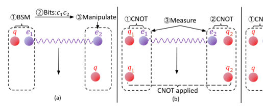
<figcaption class="paper-figure-caption"><b>Fig 1.</b> Fig. 1: Quantum communication. (a) Teleportation, (b) Telegate, (c) Cat-Entanglement. Dashed boxes are the network nodes; the initial (final) state of the qubits is at the top (bottom).</figcaption>
</figure>
<figure class="paper-figure-card">
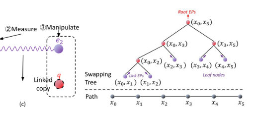
<figcaption class="paper-figure-caption"><b>Fig 2.</b> Fig. 2: Swapping tree to generate remote EPs.</figcaption>
</figure>
<figure class="paper-figure-card">
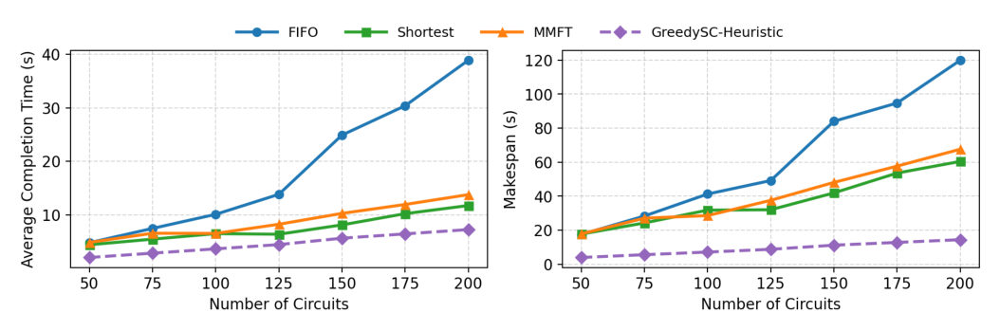
<figcaption class="paper-figure-caption"><b>Fig 3.</b> Fig. 3: The total number of circuits per stream is varied. Panels show (a) average completion time and (b) makespan. Arrivals followed a Poisson process and all other network and runtime parameters were held fixed. Curves compared FIFO, Shortest, and MMFT within the same event-driven loop for the online case. GreedySC-Heuristic was included as the offline baseline for comparison.</figcaption>
</figure>
<figure class="paper-figure-card">
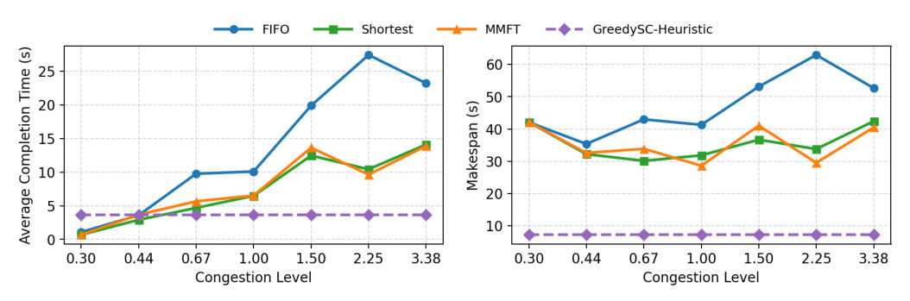
<figcaption class="paper-figure-caption"><b>Fig 4.</b> Fig. 4: The offered load is varied by scaling the arrival rate (reported as a congestion level on the x-axis; higher values indicate heavier load). Panels show (a) average completion time and (b) makespan. Curves compare FIFO, Shortest, and MMFT for the online case, with GreedySC-Heuristic included as the offline baseline for comparison; the arrival rate does not affect the offline case.</figcaption>
</figure>
<figure class="paper-figure-card">
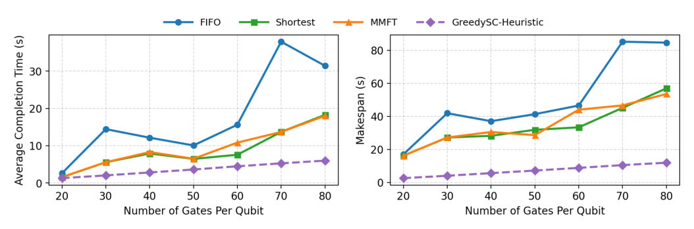
<figcaption class="paper-figure-caption"><b>Fig 5.</b> Fig. 5: The number of gates per qubit is varied. Panels show (a) average completion time and (b) makespan. Each point aggregated results from circuits constructed at the indicated gate count under identical network and arrival settings. Curves compared FIFO, Shortest, and MMFT for the online case, with GreedySC-Heuristic included as the offline baseline for comparison.</figcaption>
</figure>
</div>
<p><strong>Summary.</strong> This paper tackles the complex problem of scheduling quantum circuits arriving in a stream over noisy quantum networks. It develops an online, event-driven framework to minimize completion time while managing physical constraints like memory limits and decoherence. The work compares various scheduling policies to determine the best strategy for real-world, resource-constrained quantum cloud execution.</p>
<p><strong>Why it may be interesting.</strong> It provides a rigorous framework for resource management in distributed quantum computing, which is highly relevant for understanding the practical limitations of scaling quantum processors via networking.</p>
<details>
<summary>Detailed structure</summary>
<p><strong>Main problem.</strong> The paper addresses the Online Scheduling and Distribution of Quantum Circuits (OS-DQC) over quantum networks, where circuits arrive as a stochastic stream without knowledge of future jobs.</p>
<p><strong>Main result.</strong> Among online policies, the Shortest-Time Packing heuristic generally outperforms FIFO, while an offline greedy heuristic often sets the best lower bound, though online adaptability is crucial.</p>
<p><strong>Method.</strong> The authors formalize the problem as an event-driven decision process, comparing admission policies like FIFO, Shortest, and MMFT against an offline baseline.</p>
<p><strong>Model / system.</strong> The system is a quantum network modeled as a graph where nodes are quantum memories and edges are quantum channels. Circuits are executed using primitives like teleportation and telegate, constrained by finite memory and decoherence time.</p>
<p><strong>Key observables.</strong> Mean completion time, makespan ($\max_c e_c$), and average waiting time.</p>
<p><strong>Important parameters / regimes.</strong> Arrival rate ($\lambda$), decoherence threshold ($   au$), network congestion, and circuit/gate complexity.</p>
<p><strong>Assumptions / limitations.</strong> The problem is fundamentally online, requiring decisions without foresight of future arrivals, and the use of approximate prediction oracles for scheduling.</p>
<p><strong>Figures summary.</strong> Figures compare the performance (average completion time and makespan) of FIFO, Shortest, MMFT, and an offline heuristic across varying circuit numbers, congestion levels, and gate counts.</p>
<p><strong>Paper structure.</strong> The paper first formalizes the OS-DQC problem, detailing the physical model and primitives. It then develops an event-driven framework and compares multiple online admission policies (FIFO, Shortest, MMFT) against an offline benchmark using comprehensive simulations.</p>
</details>
<details>
<summary>Abstract</summary>
<p>Emerging quantum networks enable distributed quantum computing (DQC) by interconnecting modest, noisy quantum processors. However, practical deployments face tight memory budgets, probabilistic entanglement generation, and decoherence, all while serving multiple users. In realistic settings -- cloud execution, iterative/interactive workloads and concurrent jobs -- circuits do not arrive in a single batch but as a stream. This creates a fundamentally online problem: the system must react to stochastic arrivals, balance latency and throughput, and remain stable under varying loads without foresight of future jobs.   We study Online Scheduling and Distribution of Quantum Circuits (OS-DQC) and formalize the online scheduling problem for quantum networks: circuits arrive over time and must be executed without knowledge of future arrivals. At each event time (arrival or completion), the system decides which waiting circuits to launch and how to place their qubits, while accounting for congestion from in-flight circuits and constraints due to finite memories and decoherence. The objective is to minimize the mean completion time and makespan under these physical and resource constraints.</p>
</details>
<p><sub><a href="#top">↑ back to top</a></sub></p>

<p><a id="paper-2610.25160"></a></p>
<h3 id="photon-production-at-kepler-escape-threshold"><a href="http://arxiv.org/abs/2610.25160v1">Photon production at Kepler escape threshold</a></h3>
<p><strong>Authors:</strong> Michael R. R. Good<br>
<strong>Type:</strong> theory · <strong>Category:</strong> other · <strong>PDF:</strong> <a href="https://arxiv.org/pdf/2610.25160v1">https://arxiv.org/pdf/2610.25160v1</a><br>
<strong>Analysis basis:</strong> full PDF text, analyzed in chunks</p>
<div class="figure-strip-hint">↔ Scroll figures horizontally</div>
<div class="paper-figures-scroll">
<figure class="paper-figure-card">
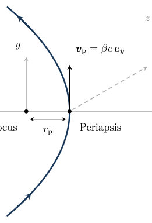
<figcaption class="paper-figure-caption"><b>Fig 1.</b> FIG. 1. Geometry of the prescribed Kepler parabola, Eq. (2). The focus is at the origin and periapsis at x = rp. Curve arrows indicate increasing time. The in-plane emission di- rection n is illustrative; the radiation calculation includes all solid angles.</figcaption>
</figure>
<figure class="paper-figure-card">
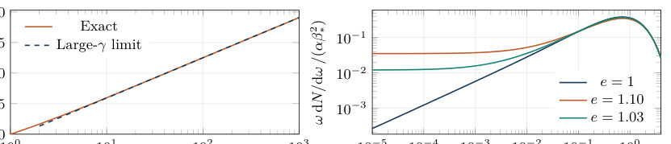
<figcaption class="paper-figure-caption"><b>Fig 2.</b> FIG. 2. (a) Exact all-speed critical count and logarithmic limit. (b) Dipole infrared spectra at fixed coupling and closest distance, calculated from Eq. (7) for the corresponding Newtonian Kepler orbits, using T∗as the time unit. The hyperbolic plateau height and the frequencies resolving it vanish as e →1+; at threshold, ω dN/dω ∝ω2/3. The low-speed comparison in (b) is distinct from the all-speed result in (a).</figcaption>
</figure>
<figure class="paper-figure-card">
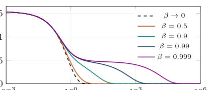
<figcaption class="paper-figure-caption"><b>Fig 3.</b> FIG. 3. Angular-momentum spectrum about the focus, nor- malized by αℏβ2, from the exact angular quadrature (33). All speeds share the infrared limit 8/(3 √</figcaption>
</figure>
</div>
<p><strong>Summary.</strong> This theoretical paper calculates the total photon emission from a charged particle following Keplerian orbits. It derives an exact, finite formula for the photon count in the parabolic case, contrasting it with the divergent count in the hyperbolic case. The work is significant for establishing a robust benchmark for quantum radiation theory near critical orbital thresholds.</p>
<p><strong>Why it may be interesting.</strong> The rigorous comparison of radiation counts across different orbital regimes (parabolic vs. elliptical vs. hyperbolic) provides a deep theoretical benchmark for understanding how boundary conditions and orbital dynamics affect quantum radiation processes.</p>
<details>
<summary>Detailed structure</summary>
<p><strong>Main problem.</strong> The paper determines the total number of photons radiated by a charged particle following a prescribed Keplerian orbit, specifically comparing the results for parabolic, elliptical, and hyperbolic trajectories near the escape threshold.</p>
<p><strong>Main result.</strong> An exact, finite, and scale-independent closed-form expression for the total photon count is derived for the parabolic orbit, while the hyperbolic case shows an infrared divergence.</p>
<p><strong>Method.</strong> The authors use relativistic electrodynamics, deriving the photon density and integrating it over frequency and solid angle, employing Airy functions and elliptic integrals to evaluate the resulting complex integrals.</p>
<p><strong>Model / system.</strong> The system models the radiation from a charged particle moving along Newtonian Keplerian orbits (parabola, ellipse, hyperbola) around an attracting center, treated fully relativistically.</p>
<p><strong>Key observables.</strong> Total photon count ($N$), total radiated energy ($E$), total linear momentum ($P$), and total angular momentum ($J_z$).</p>
<p><strong>Important parameters / regimes.</strong> Periapsis speed ($eta$), maximum rapidity ($\eta$), and the orbital eccentricity ($e$).</p>
<p><strong>Assumptions / limitations.</strong> The calculation assumes the prescribed trajectory is not necessarily the solution to full relativistic Coulomb dynamics, and the analysis compares the limits of different orbital types.</p>
<p><strong>Figures summary.</strong> Figure 1 illustrates the geometry of the prescribed Kepler parabola orbit, showing the focus at the origin and the periapsis location.</p>
<p><strong>Paper structure.</strong> The paper systematically calculates the total observables for the Kepler parabola, derives closed-form expressions, analyzes asymptotic limits (large $\eta$, low $eta$), and compares these results rigorously against the neighboring elliptical and hyperbolic regimes.</p>
</details>
<details>
<summary>Abstract</summary>
<p>We obtain an exact closed-form total photon count for a prescribed Newtonian Kepler parabola, with a fully relativistic treatment of its radiation. We also obtain closed expressions for the angularly resolved photon spectrum and elementary expressions for the total radiated energy and momenta. The count is finite, scale-independent, and analytic in subluminal speed at closest approach. At large maximum rapidity $η$, $N\sim(7α/\sqrt6)η$, while $E\propto e^{3η}$ at fixed passage timescale: the radiation chiefly hardens. For slow motion at fixed coupling and closest distance, a nearby ellipse emits fewer photons but more energy and angular momentum per orbit. The hyperbolic photon count remains IR divergent arbitrarily close to threshold, while the count at the exact parabolic threshold is finite.</p>
</details>
<p><sub><a href="#top">↑ back to top</a></sub></p>

<p><a id="paper-2610.24167"></a></p>
<h3 id="probing-wetting-and-solidification-dynamics-of-neon-thin-films-with-a-high-math1590math-superconducting-circuit"><a href="http://arxiv.org/abs/2610.24167v1">Probing wetting and solidification dynamics of neon thin films with a high-$T_c$ superconducting circuit</a></h3>
<p><strong>Authors:</strong> Brennan Dizdar, Yueheng Shi, David I. Schuster, Christopher S. Lang<br>
<strong>Type:</strong> experiment · <strong>Category:</strong> other · <strong>PDF:</strong> <a href="https://arxiv.org/pdf/2610.24167v1">https://arxiv.org/pdf/2610.24167v1</a><br>
<strong>Analysis basis:</strong> full PDF text, analyzed in chunks</p>
<div class="figure-strip-hint">↔ Scroll figures horizontally</div>
<div class="paper-figures-scroll">
<figure class="paper-figure-card">
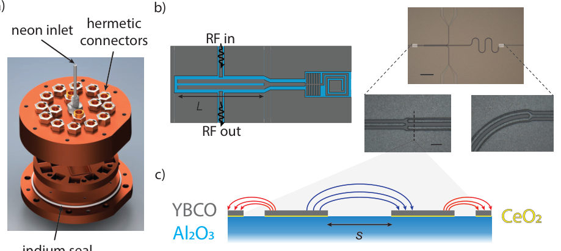
<figcaption class="paper-figure-caption"><b>Fig 1.</b> FIG. 1. (a) Rendering of the hermetic sample cell used in the experiment [12]. (b) (Left) Schematic of our DC-coupled coplanar stripline resonator. The differential mode frequency is determined by the coplanar strip length L where the voltage node is located where the pins join. An on-chip LC low pass filter, consisting of a set of interdigitated finger capacitors in series with a spiral inductor to a bond pad, helps suppress leakage of the common mode. (Right) Optical image of the device, with zoom-ins of the voltage anti-node of the coplanar stripline (left) and where the two pins join to define the voltage node for the differential mode (right). Scale bars correspond to 50 µm (top) and...</figcaption>
</figure>
<figure class="paper-figure-card">
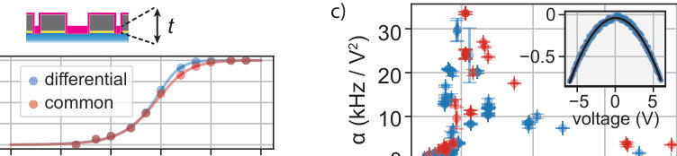
<figcaption class="paper-figure-caption"><b>Fig 2.</b> FIG. 2. (a) Monitoring the differential mode resonance frequency as liquid neon is filled into the cell held at T = 26 K. Arrows indicate discrete filling events. Data segments for various qualitative regimes (I - IV) are spliced together on same plot with axes breaks to show relative timing. (b) Simulated finite element model of estimating the neon thickness t from the frequency shift of the resonator modes. (c) In-situ dielectric loading tunability via an applied DC voltage for liquid films of various thicknesses. Each individual trace (example shown in inset) displays no hysteresis.</figcaption>
</figure>
<figure class="paper-figure-card">
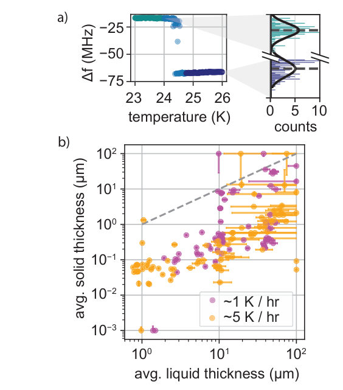
<figcaption class="paper-figure-caption"><b>Fig 3.</b> FIG. 3. (a) Left: representative trace of the frequency shift of the differential mode as the mixing chamber is cooled through the freezing point. Right: the frequency data is binned in the temperature ranges T ∈[23, 24.2] K and T ∈[24.75, 26] K for the solid and liquid thickness estimation, respectively. (b) The average film thickness in the liquid and solid states de- termined from the histogram fits in (a) are plotted against each other across many different trials at two difference cool- ing rates. Within our statistics, the two cooling rates yield similar distributions. Gray dashed line indicates equal thick- ness in the liquid and solid states.</figcaption>
</figure>
<figure class="paper-figure-card">
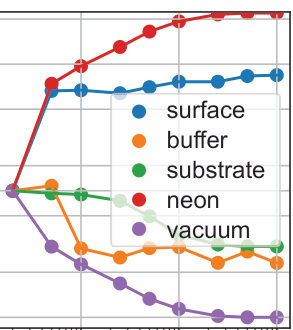
<figcaption class="paper-figure-caption"><b>Fig 4.</b> FIG. 6. (a) Cross section of 2D finite element Ansys Maxwell simulation. The dielectric regions are chosen as the bulk sapphire (εsapphire = 10), the 40 nm thick layer of CeO2 (εCeO2 = 26), a 10 nm thick surface layer (informed by AFM images that reveal significant surface roughness) that encompasses both the metal-air and substrate-air interfaces (εsurf = 10), and the neon film. (b) Percent change in the participation ratio δp =  pi(t) −pi(t0)  /pi(t0) of each dielec- tric volume relative to a reference simulation with a uniform coverage of t0 = 20 nm as a function of neon thickness t.</figcaption>
</figure>
<figure class="paper-figure-card">
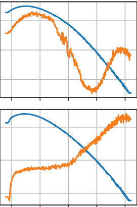
<figcaption class="paper-figure-caption"><b>Fig 5.</b> FIG. 5. Temperature dependence of the resonant frequency fres and loaded quality factor QL of the differential (top) and common (bottom) modes.</figcaption>
</figure>
</div>
<p><strong>Summary.</strong> This work uses a superconducting resonator to study how liquid and solid neon films interact with microwave circuits. By monitoring changes in resonance frequency and quality factor, the authors characterize the non-equilibrium fluid dynamics of neon wetting and solidification. The results are crucial for understanding the environmental coupling and loss mechanisms in next-generation hybrid quantum devices.</p>
<p><strong>Why it may be interesting.</strong> The work bridges condensed matter physics (fluid dynamics, phase transitions) with superconducting circuit QED, providing empirical data on how ambient quantum materials interact with highly sensitive quantum devices.</p>
<details>
<summary>Detailed structure</summary>
<p><strong>Main problem.</strong> The study investigates the wetting and solidification dynamics of neon thin films and quantifies the impact of these condensed noble gas films on the microwave loss properties of superconducting circuits.</p>
<p><strong>Main result.</strong> The experiment successfully characterized rich non-equilibrium fluid dynamics, observing distinct wetting regimes and quantifying the increase in resonator quality factor ($Q_L$) upon neon deposition, while noting limitations in precise solid film thickness control.</p>
<p><strong>Method.</strong> Measurements involve monitoring the resonance frequency shift ($\Delta f$) and loaded quality factor ($Q_L$) of a superconducting resonator as neon is introduced or allowed to freeze in a controlled, hermetic environment.</p>
<p><strong>Model / system.</strong> The physical system is a voltage-tunable, multimode coplanar stripline resonator made of high-$T_c$ YBCO, housed in a cell near the neon triple point. The analysis uses electromagnetic simulations (Ansys Maxwell) to model the frequency shift based on the dielectric properties of the liquid and solid neon films.</p>
<p><strong>Key observables.</strong> Resonance frequency shift ($\Delta f$), loaded quality factor ($Q_L$), and film thickness ($t$) across various wetting regimes (I-IV).</p>
<p><strong>Important parameters / regimes.</strong> Neon film thickness (ranging from saturation levels near 20 nm to larger amounts), temperature near the triple point (24.56 K), and the dielectric constants of liquid ($\epsilon_r \approx 1.19$) and solid ($\epsilon_r \approx 1.24$) neon.</p>
<p><strong>Assumptions / limitations.</strong> The analysis often assumes uniform film coverage across the resonator surface, and the dielectric loss model alone is insufficient to explain the observed increase in $Q_L$.</p>
<p><strong>Figures summary.</strong> Figures illustrate the setup (hermetic cell, resonator schematic), the frequency shift evolution across four distinct liquid filling regimes (I-IV), and the dependence of $Q_L$ on neon thickness for both liquid and solid states.</p>
<p><strong>Paper structure.</strong> The paper details the experimental setup, presents measurements of frequency shifts and $Q_L$ as a function of neon dosing/temperature, analyzes the observed non-equilibrium fluid dynamics, and discusses the implications for superconducting circuit performance.</p>
</details>
<details>
<summary>Abstract</summary>
<p>Integrating condensed noble gases with superconducting circuits offers new opportunities for operating hybrid quantum devices. In particular, electrons on solid neon have recently emerged as exceptionally coherent charge qubits, however the growth of the underlying neon films on patterned devices remains poorly controlled. We monitor neon films near the triple point using a multimode resonator fabricated from high-$T_c$ YBCO, which remains superconducting at temperatures where the liquid phase exists and whose geometry sets a thickness-sensing window near 1 $μ$m. In the liquid state we observe rich film dynamics: uniform wetting that saturates near 20 nm, drainage of thicker films, and spontaneous thickness oscillations, reflecting the extreme sensitivity of thick films in this regime. A galvanic connection to our sensing volume enables in-situ electrostatic tuning of the liquid film thickness. Statistics of freezing the neon across various liquid levels reveal variations of the solid film thickness by approximately an order of magnitude. We also observe a two-fold increase in the quality factor of the resonators at the level of $10^3$ with added neon and rule out dielectric loss as the limiting factor. Our results demonstrate that hermetic packaging facilitates the investigation of both rich non-equilibrium fluid dynamics and the impact of condensed noble gas films on microwave loss in superconducting circuits, but may not be the best modality for growing solid neon films with precisely controlled thickness.</p>
</details>
<p><sub><a href="#top">↑ back to top</a></sub></p>

<p><a id="paper-2610.24403"></a></p>
<h3 id="prototype-guided-optimization-of-quantum-data-embeddings-with-linear-cost"><a href="http://arxiv.org/abs/2610.24403v1">Prototype-Guided Optimization of Quantum Data Embeddings with Linear Cost</a></h3>
<p><strong>Authors:</strong> Seokhoon Jeong, Daniel K. Park<br>
<strong>Type:</strong> theory · <strong>Category:</strong> quantum information and computing · <strong>PDF:</strong> <a href="https://arxiv.org/pdf/2610.24403v1">https://arxiv.org/pdf/2610.24403v1</a><br>
<strong>Analysis basis:</strong> full PDF text, analyzed in chunks</p>
<div class="figure-strip-hint">↔ Scroll figures horizontally</div>
<div class="paper-figures-scroll">
<figure class="paper-figure-card">
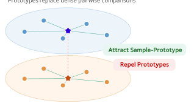
<figcaption class="paper-figure-caption"><b>Fig 1.</b> Figure 1: Comparison of pairwise and single-prototype-guided quantum embed- ding optimization. (a) Pairwise optimization promotes high fidelity for same-class sample pairs and low fidelity for cross-class pairs, requiring B(B −1)/2 evalua- tions. (b) The proposed method promotes high sample-to-class-prototype fidelity and low cross-class prototype fidelity, reducing the cost to B + 1 evaluations.</figcaption>
</figure>
<figure class="paper-figure-card">
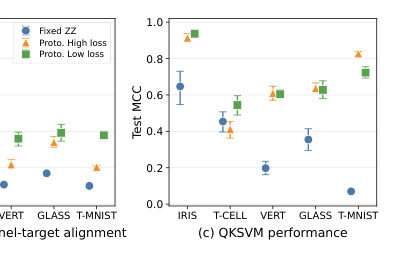
<figcaption class="paper-figure-caption"><b>Fig 2.</b> Figure 2: Prototype geometry and downstream behavior. VERT means VERTEBRAL. For each seed, ten unique GA circuits with the lowest and highest training prototype losses form the low- and high-loss groups, respectively. (a) Training Cprior, where the dashed line marks the threshold for a non-vacuous positive certificate. (b) Test pairwise-macro CKTA. (c) Test QKSVM MCC. Markers and error bars denote the mean and 95% seed-bootstrap CI.</figcaption>
</figure>
<figure class="paper-figure-card">
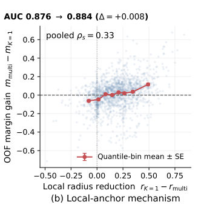
<figcaption class="paper-figure-caption"><b>Fig 3.</b> Figure 3: Multi-prototype optimization on GLASS. (a) Vilolin plots of OOF mini- mum normalized one-vs-one margin distributions for the single-prototype (K = 1) and multi-prototype (K = (2, 1, 3)) model, where the entries of K denote the class- specific numbers of prototypes. The white circle and the bar indicate the median and interquartile range (IQR) of each distribution, respectively. (b) OOF margin gain ver- sus the reduction in sample-to-assigned-prototype trace-distance radius. Quantile-bin means ± standard errors are shown. ρs means the pooled Spearman correlation.</figcaption>
</figure>
<figure class="paper-figure-card">
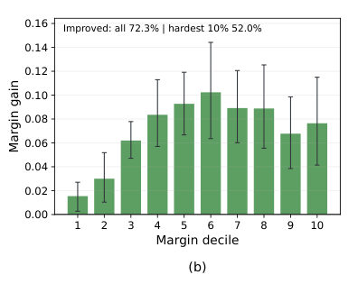
<figcaption class="paper-figure-caption"><b>Fig 4.</b> Figure 4: Geometric analysis for the T-MNIST NQE endpoints in Table 1. (a) Exact train class-pair ensemble distance ∆Φ,ab. Each marker represents one of the ten class pairs and reports its average over ten seeds. (b) Mean Test margin gain, ∆em = emPrototype −emPairwise-B, within deciles defined by the leave-one-seed-out Pairwise-B difficulty. Decile 1 contains the hardest 10% of Test samples. Error bars indicate 95% seed-bootstrap intervals.</figcaption>
</figure>
<figure class="paper-figure-card">

<figcaption class="paper-figure-caption"><b>Fig 5.</b> Figure 4(a) shows that all ten class-pair markers lie above the diagonal. Thus, Prototype increases ∆Φ,ab for every class pair, rather than improving only the macro average. The average of exact class-ensemble distance increases from 0.443 to 0.764, accompanied by an increase in Test MCC from 0.642 to 0.779.</figcaption>
</figure>
</div>
<p><strong>Summary.</strong> This paper addresses the computational bottleneck in optimizing quantum data embeddings for machine learning by replacing costly pairwise fidelity calculations with an efficient prototype-guided objective. By focusing on class prototypes, the authors reduce the complexity from $O(B^2)$ to $O(B)$, enabling the training of high-performing Quantum Kernel SVMs on larger datasets.</p>
<p><strong>Why it may be interesting.</strong> This work provides a crucial algorithmic improvement for applying quantum machine learning, transforming an intractable quadratic optimization problem into a linear one, which is vital for scaling QML to real-world datasets.</p>
<details>
<summary>Detailed structure</summary>
<p><strong>Main problem.</strong> Existing data-adaptive quantum embedding optimization methods suffer from a computational bottleneck due to pairwise fidelity evaluations scaling quadratically with the number of samples ($O(B^2)$).</p>
<p><strong>Main result.</strong> A prototype-guided framework reduces the complexity to $O(B)$ fidelity evaluations while maintaining competitive Quantum Kernel Support Vector Machine (QKSVM) performance on benchmark datasets.</p>
<p><strong>Method.</strong> The authors derive a measurable lower certificate for class-ensemble distinguishability using class prototypes and construct a prototype-based objective function combining sample-to-prototype compactness, within-class coherence, and cross-class separation.</p>
<p><strong>Model / system.</strong> The system involves mapping classical data $x$ to a quantum state $|\psi_\Phi(x)
angle$ via an $n$-qubit quantum data embedding circuit $U_\Phi(x)$. The optimization is performed on the parameters of this embedding circuit.</p>
<p><strong>Key observables.</strong> Class-ensemble distinguishability ($\Delta\Phi$), Pairwise Fidelity Kernel ($k_\Phi$), Matthews Correlation Coefficient (MCC), and the geometric margin ($e_{mi}$).</p>
<p><strong>Important parameters / regimes.</strong> The complexity scales are $O(B^2)$ (pairwise) vs. $O(B)$ (prototype-guided); the number of qubits ($n$) and the number of prototypes ($K$).</p>
<p><strong>Assumptions / limitations.</strong> The primary assumption is that class-ensemble distinguishability can be effectively bounded and optimized using only prototype-based metrics, avoiding full pairwise comparisons.</p>
<p><strong>Figures summary.</strong> Figures compare the computational cost reduction between pairwise and prototype methods, and analyze the resulting geometric separation ($\Delta\Phi,ab$) and QKSVM margin ($e_{mi}$) across different data difficulty levels.</p>
<p><strong>Paper structure.</strong> The paper first identifies the $O(B^2)$ bottleneck, then introduces the theoretical framework using class prototypes to derive an $O(B)$ lower certificate for distinguishability. It details the composite objective function ($L_{PG}$) and validates its use in an end-to-end pipeline combining circuit optimization with performance evaluation.</p>
</details>
<details>
<summary>Abstract</summary>
<p>In supervised quantum machine learning with classical data, classification performance critically depends on the geometry induced by quantum data embedding. Existing data-adaptive approaches rely on pairwise fidelity evaluations between samples, which scale as $O(B^2)$ for $B$ samples and create a computational bottleneck in iterative embedding optimization. To address this issue, we propose a prototype-guided framework for efficient data-adaptive quantum embedding. Using class-prototype separation and sample-to-prototype compactness, we derive a measurable lower certificate for class-ensemble distinguishability and construct a prototype-based objective requiring only $O(B)$ fidelity evaluations. We integrate this objective into an end-to-end pipeline that combines task-specific quantum circuit architecture optimization with continuous refinement of the data-embedding parameters. Across five benchmark datasets with up to 20 qubits, our method retains competitive quantum kernel support vector machine (SVM) performance while reducing fidelity-evaluation cost, with particularly strong gains over budget-matched pairwise optimization on T-MNIST. Geometric analyses examine how the learned embeddings relate to kernel alignment and classification margins, revealing dataset-dependent benefits and limitations. We further derive a prototype-based classifier in the reproducing kernel Hilbert space that provides an explicit witness for the SVM objective and a low-cost proxy for model selection, and extend the framework to multiple prototypes for multimodal class structures.</p>
</details>
<p><sub><a href="#top">↑ back to top</a></sub></p>

<p><a id="paper-2610.26240"></a></p>
<h3 id="q-maldetect-quantum-image-based-malware-detection-and-adversarial-robustness-analysis"><a href="http://arxiv.org/abs/2610.26240v1">Q-MALDetect: Quantum Image-Based Malware Detection and Adversarial Robustness Analysis</a></h3>
<p><strong>Authors:</strong> Walid El Maouaki, Mohammad Izen, Nouhaila Innan, Alberto Marchisio, Muhammad Shafique<br>
<strong>Type:</strong> both · <strong>Category:</strong> quantum information and computing · <strong>PDF:</strong> <a href="https://arxiv.org/pdf/2610.26240v1">https://arxiv.org/pdf/2610.26240v1</a><br>
<strong>Analysis basis:</strong> full PDF text, analyzed in chunks</p>
<div class="figure-strip-hint">↔ Scroll figures horizontally</div>
<div class="paper-figures-scroll">
<figure class="paper-figure-card">
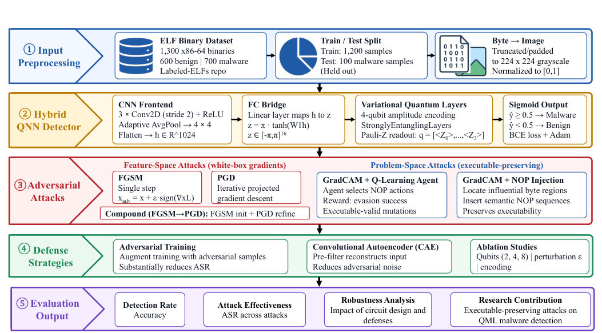
<figcaption class="paper-figure-caption"><b>Fig 1.</b> Fig. 1: Q-MALDetect evaluation workflow. ELF binaries are converted to 224 × 224 normalized byte images and divided into a 1,200-sample model-development pool and a 100-malware attack holdout. A CNN bridge supplies normalized amplitudes to a variational quantum circuit. The evaluation covers three feature-space attacks and two Grad-CAM-guided, executable-aware NOP-insertion attacks; dynamic adversarial training and CAE preprocessing are then tested under the same attack families. Ablations vary perturbation budget, qubit count, encoding interface, and NOP length, while the final stage reports clean metrics, ASR, attribution behavior, and noise-model sensitivity.</figcaption>
</figure>
<figure class="paper-figure-card">
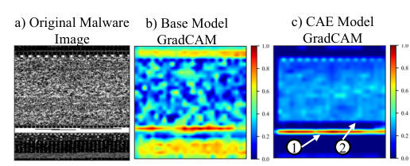
<figcaption class="paper-figure-caption"><b>Fig 2.</b> Fig. 2: Representative attribution shift under CAE preprocessing. (a) Original malware byte image. (b) The base-model Grad-CAM map is spatially diffuse. (c) The CAE-model map concentrates high activation in a narrow horizontal band aligned with the analyzed .text region. The two numbered callouts mark segments of this same high-activation band, not separate processing stages. Across 495 paired maps, .text attribution mass increases from 35.2% to 45.7%.</figcaption>
</figure>
<figure class="paper-figure-card">
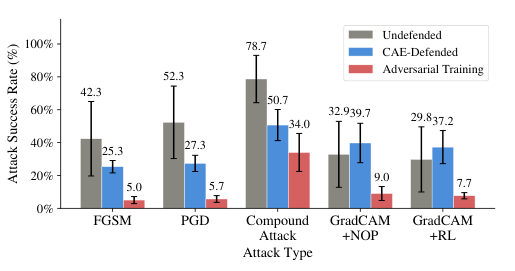
<figcaption class="paper-figure-caption"><b>Fig 3.</b> Fig. 4: ASR under the undefended, CAE-defended, and adversarially trained conditions. FGSM, PGD, and Compound are feature- space ASRs; Grad-CAM+NOP and Grad-CAM+RL are conditional executable ASRs. Bar labels round the corresponding means to whole percentages. AT reduces all five attacks, whereas the CAE reduces feature-space ASR but increases both executable-aware rates.</figcaption>
</figure>
<figure class="paper-figure-card">
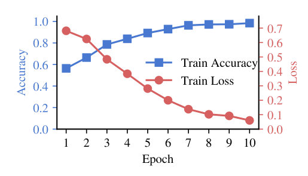
<figcaption class="paper-figure-caption"><b>Fig 4.</b> Fig. 3: Training convergence for one illustrative run. Loss decreases from 0.6815 to 0.0605 while training accuracy increases from 56.41% to 98.44% over 10 epochs.</figcaption>
</figure>
<figure class="paper-figure-card">
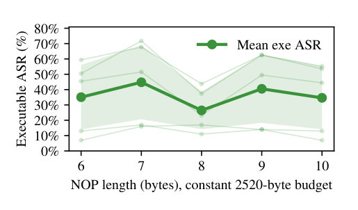
<figcaption class="paper-figure-caption"><b>Fig 5.</b> Fig. 5: Conditional executable ASR versus NOP length with total inserted volume fixed at 2,520 bytes, averaged over five seeds. Faint lines show individual seeds and the bold line shows the mean. The absence of a monotonic length trend, together with large seed variation, indicates that total displacement and detector fragility dominate the identity of the selected NOP.</figcaption>
</figure>
</div>
<p><strong>Summary.</strong> This paper introduces Q-MALDetect, a hybrid quantum-classical model for detecting malware from binary images. It rigorously tests the model's security by subjecting it to both standard feature-space and advanced, executable-aware adversarial attacks. The findings emphasize that while dynamic adversarial training improves robustness, no single defense or architectural choice guarantees security, necessitating multi-faceted threat modeling for real-world deployment.</p>
<p><strong>Why it may be interesting.</strong> This work is interesting because it applies quantum computational models to a concrete, complex security problem (malware detection), forcing an analysis of quantum model robustness against sophisticated, structured adversarial inputs, which touches upon quantum information security.</p>
<details>
<summary>Detailed structure</summary>
<p><strong>Main problem.</strong> The paper addresses the critical gap in understanding the adversarial robustness of Quantum Machine Learning (QML) models when applied to malware detection, particularly comparing feature-space attacks against executable-aware binary mutations.</p>
<p><strong>Main result.</strong> Dynamic adversarial training proved to be the most effective defense, significantly reducing the Attack Success Rate (ASR) across various attack types. However, the study concludes that reliable deployment requires testing against both feature-space and executable-aware attacks, as clean accuracy is insufficient.</p>
<p><strong>Method.</strong> The authors developed Q-MALDetect, a hybrid detector combining a CNN frontend with a variational quantum circuit, and rigorously tested it using classical attacks (FGSM, PGD) and complex, executable-aware attacks (Grad-CAM guided NOP insertion).</p>
<p><strong>Model / system.</strong> The system uses x86-64 ELF binaries converted into byte-images ($224 	imes 224$). The detector architecture is a hybrid model featuring a CNN frontend, an FC bridge, and a variational quantum circuit utilizing 4-qubit amplitude encoding.</p>
<p><strong>Key observables.</strong> Attack Success Rate (ASR) for feature-space and executable-aware attacks; detection accuracy; and the reduction in ASR achieved by dynamic adversarial training.</p>
<p><strong>Important parameters / regimes.</strong> Perturbation budget ($\epsilon$); number of qubits ($n$); and the specific attack type (e.g., Grad-CAM guided NOP insertion).</p>
<p><strong>Assumptions / limitations.</strong> The primary assumption is that the effectiveness of defenses and attacks is highly dependent on the specific perturbation constraints and evaluation conditions, invalidating reliance on clean accuracy alone.</p>
<p><strong>Figures summary.</strong> Figures illustrate the complete evaluation protocol, ASR comparisons across different attack types and defense strategies, the impact of varying qubit counts, and the comparison between amplitude and angle encoding results.</p>
<p><strong>Paper structure.</strong> The paper follows a structure of problem definition (QML security gap), model proposal (Q-MALDetect), detailed methodology (attack/defense implementation), comprehensive evaluation (ablation studies on qubits, encoding, and defenses), and concluding analysis on deployment requirements.</p>
</details>
<details>
<summary>Abstract</summary>
<p>Quantum machine-learning (QML) models are increasingly considered for security applications, yet their adversarial robustness in malware analysis remains insufficiently understood. This paper presents Q-MALDetect, a hybrid convolutional and variational-quantum detector for byte-image representations of x86-64 Executable and Linkable Format (ELF) binaries, and evaluates it under feature-space and a range of Grad-CAM-guided, executable-aware evasion attacks. The model achieves 97.2% training accuracy, but its robustness deteriorates as attack strength increases, with the strongest evaluated feature-space attack reaching a 78.7% attack success rate (ASR). Among executable-aware attacks, Grad-CAM-guided no-operation (NOP) insertion produces the highest conditional ASR of 32.9%. Dynamic adversarial training is the most effective evaluated defense, reducing feature-space ASR to as low as 5.0%, executable-aware ASR to 7.7%, and the sequential-attack ASR to 34.0%. In contrast, convolutional-autoencoder preprocessing increases executable-aware ASR to 39.7%, coinciding with a rise in Grad-CAM attribution mass within the mutable .text region from 35.2% to 45.7%. Ablation results reveal no monotonic relationship between qubit count and robustness, while the encoding interface modifies the learned attack surface without neutralizing the strongest attack. These findings demonstrate that the effectiveness of attacks and defenses depends strongly on the perturbation constraints and evaluation conditions. Reliable deployment of QML malware detectors therefore requires assessment against both feature-space and executable-aware attacks rather than reliance on clean accuracy or generic denoising alone.</p>
</details>
<p><sub><a href="#top">↑ back to top</a></sub></p>

<p><a id="paper-2610.24158"></a></p>
<h3 id="reusable-qubo-derived-block-schur-inverse-factors-for-fixed-operator-finite-difference-pde-solvers"><a href="http://arxiv.org/abs/2610.24158v1">Reusable QUBO-Derived Block-Schur Inverse Factors for Fixed-Operator Finite-Difference PDE Solvers</a></h3>
<p><strong>Authors:</strong> Arash Fath Lipaei, Özgür E. Müstecaplıoğlu, Özlem Salehi, Selin Aslan<br>
<strong>Type:</strong> both · <strong>Category:</strong> quantum information and computing · <strong>PDF:</strong> <a href="https://arxiv.org/pdf/2610.24158v1">https://arxiv.org/pdf/2610.24158v1</a><br>
<strong>Analysis basis:</strong> full PDF text, analyzed in chunks</p>
<div class="figure-strip-hint">↔ Scroll figures horizontally</div>
<div class="paper-figures-scroll">
<figure class="paper-figure-card">
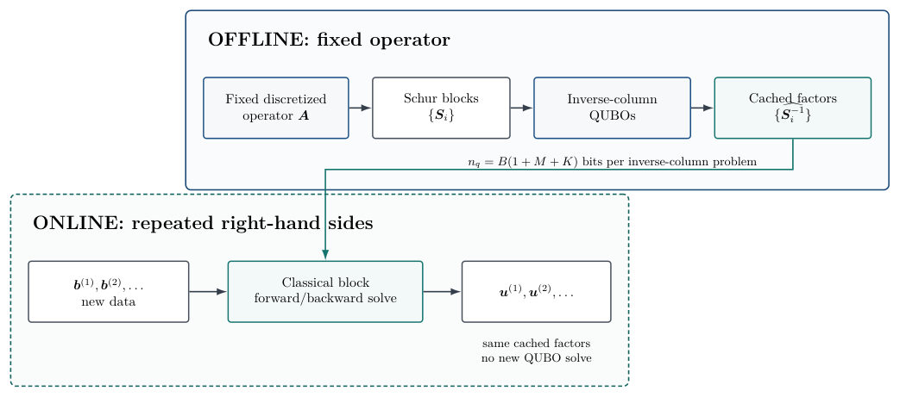
<figcaption class="paper-figure-caption"><b>Fig 1.</b> Figure 1: Offline–online architecture of the reusable block-Schur QUBO method. For a fixed finite-difference operator, the block-tridiagonal organization is reduced to Schur blocks and each required inverse column is represented as a signed fixed-point least-squares QUBO. The decoded columns are assembled into approximate Schur inverses and cached. Coupling factors may either be cached explicitly or evaluated from the cached inverse factors during substitution. Subsequent solves use only the classical block forward/backward recursions in Eqs. (12)–(14). The largest logical optimization problem therefore contains B(1 + M + K) binary variables and depends on the local block size and numerical...</figcaption>
</figure>
<figure class="paper-figure-card">
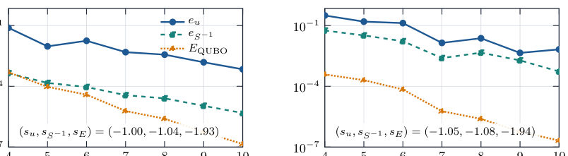
<figcaption class="paper-figure-caption"><b>Fig 2.</b> Figure 2: Exact-oracle validation of the fixed-point convergence theory for B = 2, M = 1, and K = 4, . . . , 10. Each plotted point uses the exact minimizer of every finite-bit inverse-column QUBO, obtained by exact reduced-grid minimization, so the curves isolate quantization and propagation error rather than heuristic optimizer error. Here eu is the relative PDE solution error, eS−1 is the mean Schur-inverse error, and EQUBO is the mean minimized least-squares/QUBO energy. In both PDEs, the relative solution error and mean Schur-inverse error have fitted log2 slopes close to −1, consistent with O(2−K), while the mean minimized least-squares/QUBO energy has a slope close to −2, consistent...</figcaption>
</figure>
<figure class="paper-figure-card">
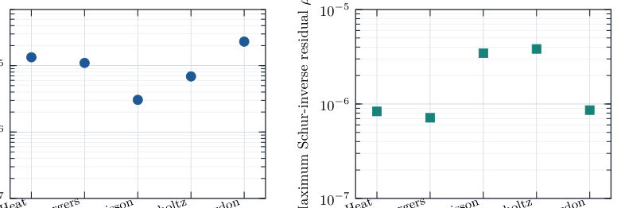
<figcaption class="paper-figure-caption"><b>Fig 3.</b> Figure 3: Exact finite-bit five-PDE validation using the prescribed multiscale correction schedule γp = γ0/8p, p = 0, 1, 2, 3. Panel (a) reports relative error against the dense numerical solve, and panel (b) reports the maximum cached Schur-inverse residual. Each point represents the complete cached-factor PDE calculation with the 24-bit inverse-column encoding.</figcaption>
</figure>
<figure class="paper-figure-card">
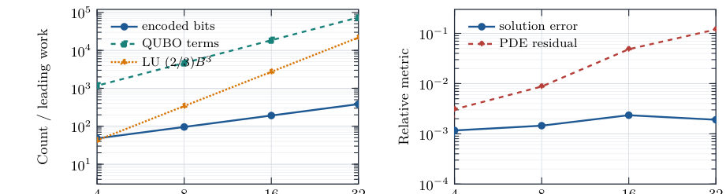
<figcaption class="paper-figure-caption"><b>Fig 4.</b> Figure 4: Large-block Poisson line-block study at fixed N = 960. Panel (a) separates three different scaling quantities: the inverse-column logical variable count grows linearly as 12B, the dense upper-triangular QUBO coefficient count grows quadratically, and the leading LU-factorization work for a conventional dense B × B block is (2/3)B3 and grows cubically; explicitly forming the inverse incurs additional work. Panel (b) shows the solution error and global residual after rounded fixed-point Schur inverses are cached and used in the complete block solve. Per-block scaling produces zero clipping for all four block sizes (Table 4); the solution remains accurate at the 10−3 level while the...</figcaption>
</figure>
<figure class="paper-figure-card">
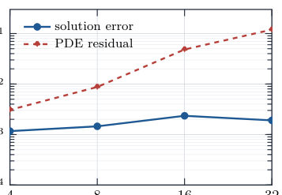
<figcaption class="paper-figure-caption"><b>Fig 5.</b> Figure 6 makes this distinction visible. Panel (a) gives the exact finite-bit recovery fraction. Panel (b) shows the local residual ratio for all mapped instances: non-exact Heat and Poisson samples often increase the local residual by a factor of a few, but the absolute residuals remain of order 10−3 or smaller. Panel (c) compares normalized objective gap with the decoded local residual. Exact hits lie at zero gap, while the non-exact samples occupy a narrow low-gap region. The end-to-end reconstructions are shown in Figure 7. For Heat, the relative error is 3.24 × 10−4. For Poisson, the two line slices of the 10 × 2 interior grid are both reproduced closely; the relative field error is...</figcaption>
</figure>
</div>
<p><strong>Summary.</strong> This paper introduces a hybrid offline-online framework to solve PDEs by leveraging quantum optimization. It uses QUBOs only in an offline stage to pre-calculate reusable local inverse factors derived from the PDE operator structure. These factors are then used in a fast, classical block-solve routine for any subsequent right-hand side, significantly reducing the quantum computational burden.</p>
<p><strong>Why it may be interesting.</strong> This work directly addresses the interface between classical numerical linear algebra (PDE solvers) and quantum optimization (QUBO), providing a concrete, reusable quantum kernel for scientific computing.</p>
<details>
<summary>Detailed structure</summary>
<p><strong>Main problem.</strong> Developing a reusable framework to solve linear systems arising from fixed-operator Partial Differential Equations (PDEs) where the right-hand side changes repeatedly.</p>
<p><strong>Main result.</strong> The authors propose an architecture that separates the operator-dependent preprocessing (offline) from the repeated solves (online), allowing QUBO optimization to run only once.</p>
<p><strong>Method.</strong> The method uses block-Schur decomposition to reduce the PDE system into local blocks, whose inverse factors are constructed by solving least-squares problems formulated as QUBOs during an offline stage.</p>
<p><strong>Model / system.</strong> The model involves discretizing PDEs (like Heat or Poisson) into large linear systems ($Ax=b$), which are then decomposed into block-tridiagonal structures suitable for Schur recursion.</p>
<p><strong>Key observables.</strong> Local inverse residuals, global solution error ($\lVert A\mathbf{u} - \mathbf{b} 
Vert$), and the normalized objective gap ($g_j$).</p>
<p><strong>Important parameters / regimes.</strong> The computational cost is governed by the local block size, not the full spatial grid dimension. Resolution is controlled by the fixed-point precision $K$.</p>
<p><strong>Assumptions / limitations.</strong> The method assumes the ability to separate the problem into local blocks and that the required inverse columns can be accurately represented by a QUBO formulation.</p>
<p><strong>Figures summary.</strong> Figure 1 illustrates the offline-online architecture. Figure 6 audits the reconstruction of inverse columns from QUBO submissions, showing residual ratios. Figure 7 shows end-to-end PDE reconstructions using cached factors for Heat, Poisson, and Klein-Gordon equations.</p>
<p><strong>Paper structure.</strong> The paper first establishes the need for a reusable solver for fixed-operator PDEs. It then details the mathematical formulation using block-Schur decomposition and reformulates the inverse factor calculation as a QUBO problem. The core contribution is the hybrid offline-online framework, followed by analysis and testing on representative PDEs.</p>
</details>
<details>
<summary>Abstract</summary>
<p>Many simulations of partial differential equations require the repeated solution of linear systems whose matrix remains fixed while the righthand side changes. We present a hybrid offline online framework for this setting. The discretized operator is organized into small coupled blocks and reduced through block Schur complements. Instead of expressing the complete PDE solution as one large binary optimization problem, quadratic unconstrained binary optimization is used only to construct reusable local inverse factors. These factors are computed during an offline stage, decoded and stored, and then reused in an ordinary classical block solve for subsequent righthand sides. The optimizer facing problem size is governed by the local block size and chosen numerical precision, rather than by the dimension of the full spatial grid. We develop the mathematical formulation, analyze the accuracy and resource requirements of the binary representation, and examine the method on representative finite difference PDE problems, including execution of the local optimization stage on quantum optimization hardware. The resulting architecture provides a reusable interface between conventional numerical linear algebra and QUBO based quantum optimization.</p>
</details>
<p><sub><a href="#top">↑ back to top</a></sub></p>

<p><a id="paper-2610.24943"></a></p>
<h3 id="scaling-dimensions-and-two-point-amplitudes-from-operator-covariance-matrices"><a href="http://arxiv.org/abs/2610.24943v1">Scaling Dimensions and Two-Point Amplitudes from Operator Covariance Matrices</a></h3>
<p><strong>Authors:</strong> You-Chiuan Chen, Ribhu K. Kaul<br>
<strong>Type:</strong> theory · <strong>Category:</strong> statistical mechanics · <strong>PDF:</strong> <a href="https://arxiv.org/pdf/2610.24943v1">https://arxiv.org/pdf/2610.24943v1</a><br>
<strong>Analysis basis:</strong> full PDF text, analyzed in chunks</p>
<div class="figure-strip-hint">↔ Scroll figures horizontally</div>
<div class="paper-figures-scroll">
<figure class="paper-figure-card">
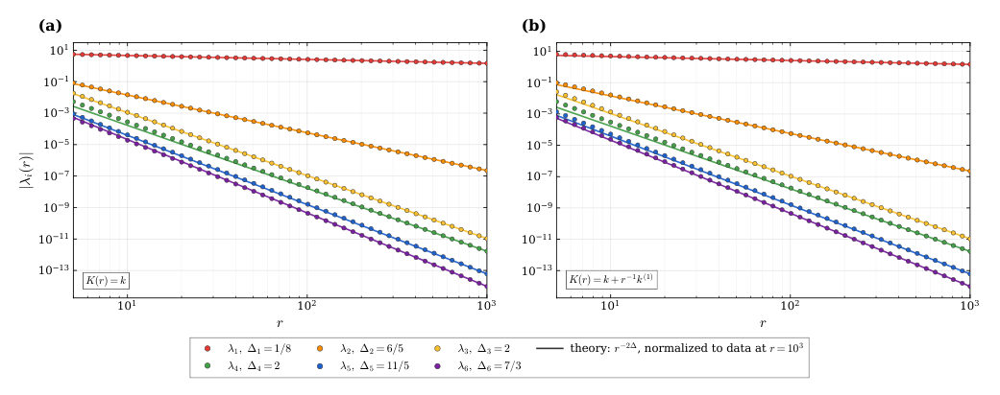
<figcaption class="paper-figure-caption"><b>Fig 1.</b> FIG. 1. Synthetic demonstration of the covariance-eigenvalue scaling predicted by Eq. (10). The dots show the absolute values of the six eigenvalues λa(r). The solid comparison lines have the theoretical slopes −2∆a and pass through the corresponding data at r = 103; they are not fits. They convincingly show that the eigenvalues of the covariance matrix decay with an exponent equal to the leading scaling dimensions. We have studied two different synthetic data set models as discussed in the text: (a) Unperturbed coefficient matrix Kab(r) = kab. (b) Coefficient matrix Kab(r) = kab + k(1) ab /r. The matrix elements Wab and kab are identical in the two panels, while k(1) ab are independent...</figcaption>
</figure>
<figure class="paper-figure-card">
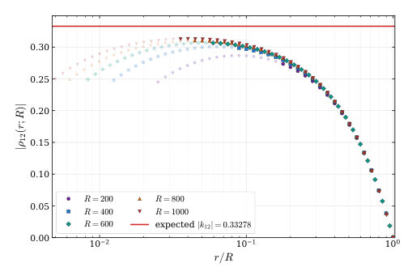
<figcaption class="paper-figure-caption"><b>Fig 2.</b> FIG. 2. Magnitude |ρ12(r; R)| of the normalized cross ratio for the first two eigenvectors of the perturbed com- plex synthetic covariance matrix, plotted against the relative separation r/R. The eigenvectors are frozen at R = 200, 400, 600, 800, and 1000, and each curve is evaluated over 5 ≤r ≤R. The horizontal red line marks the expected value |k12| = 0.33278 . . . from the random input. Every ratio vanishes at r/R = 1 because the corresponding eigenvectors diagonalize C(R). Points with r &lt; 32 are shown in lighter shades to distinguish the short-distance region; they are not omitted from the plot. With increasing R, the data approach one another over intermediate relative separations and...</figcaption>
</figure>
<figure class="paper-figure-card">
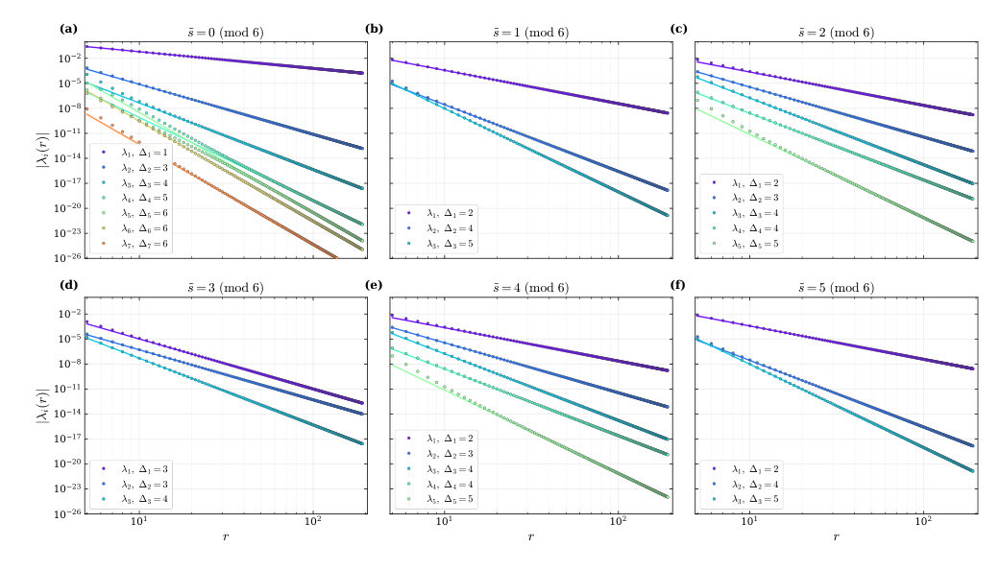
<figcaption class="paper-figure-caption"><b>Fig 3.</b> FIG. 3. Even-sector covariance spectra on the infinite triangular lattice Ising model for 5 ≤r ≤192, obtained using the Pfaffian method as described in the text. Panels (a)–(f) show ˜s = 0, 1, . . . , 5 (mod 6). The dots are the numerically exact plane data with the display threshold at 10−26. The legends identify the eigenvalue branches and their theoretical dimensions. The solid line associated with each branch has the theoretical slope −2∆and passes through its last displayed points; these lines are not fits. The fitted scaling dimensions from the data over the range 96 ≤r ≤192 are listed in Table. II.</figcaption>
</figure>
<figure class="paper-figure-card">
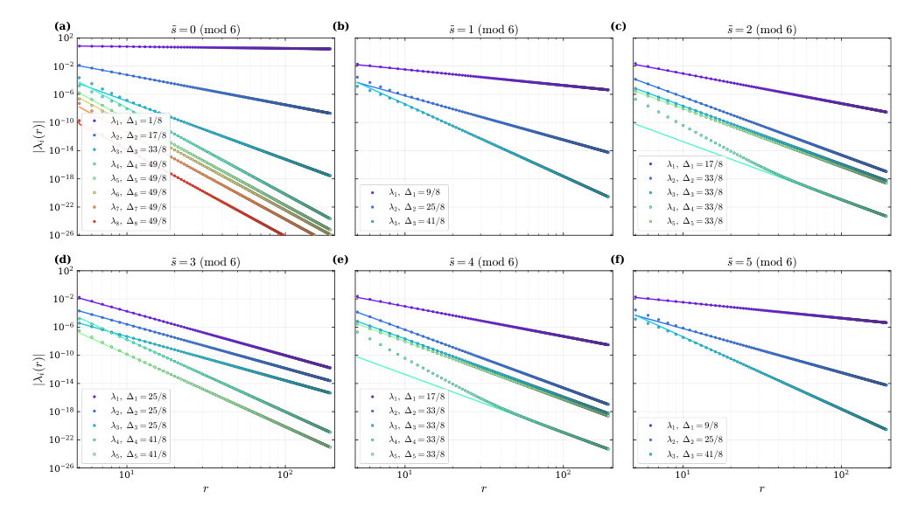
<figcaption class="paper-figure-caption"><b>Fig 4.</b> FIG. 4. Odd-sector covariance spectra on the infinite triangular lattice for 5 ≤r ≤192. Panels (a)–(f) show ˜s = 0, 1, . . . , 5 (mod 6). The dots are the numerically exact plane data with the display threshold at 10−26. The legends identify the eigenvalue branches and their theoretical dimensions. The solid line associated with each branch has the theoretical slope −2∆and passes through its last displayed points; these lines are not fits. The fitted scaling dimensions from the data over the range 96 ≤r ≤192 are listed in Table. IV.</figcaption>
</figure>
<figure class="paper-figure-card">
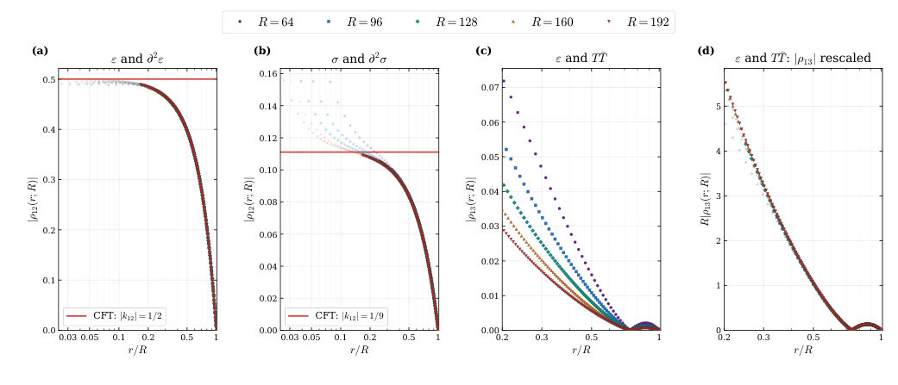
<figcaption class="paper-figure-caption"><b>Fig 5.</b> FIG. 5. Finite-distance tests of the covariance eigenvectors in the ˜s = 0 blocks on the infinite triangular lattice, plotted against r/R for R = 64, 96, 128, 160, and 192. Panels (a) and (b) show |ρ12(r; R)| for (ε, ∂2ε) in the even sector and (σ, ∂2σ) in the odd sector, respectively, with 5 ≤r ≤R. The horizontal red lines mark the plane-CFT two-point amplitudes |k12| = 1/2 and 1/9. Panels (c) and (d) show the cross-tower correlation between ε and T ¯T: panel (c) displays the unrescaled magnitude |ρ13(r; R)|, while panel (d) displays R|ρ13(r; R)|. These two panels use r/R ≥0.2. Every curve vanishes at r/R = 1 by construction. Points with r &lt; 32 are shaded in panels (a), (b), and (d) to...</figcaption>
</figure>
</div>
<p><strong>Summary.</strong> This work develops a rigorous method to determine the universal two-point correlation amplitudes of critical lattice models using only the operator covariance matrix. By analyzing the asymptotic behavior of the matrix's eigenvalues and eigenvectors, the authors show that the full structure of the continuum correlation functions can be reconstructed from finite lattice measurements. This provides a powerful, non-perturbative tool for studying critical phenomena.</p>
<p><strong>Why it may be interesting.</strong> While focused on critical phenomena, the rigorous mathematical machinery developed for extracting universal amplitudes from finite measurements (the covariance matrix) is highly relevant for analyzing correlation functions in complex quantum systems.</p>
<details>
<summary>Detailed structure</summary>
<p><strong>Main problem.</strong> The paper aims to extract universal properties, specifically scaling dimensions and two-point amplitudes, characterizing the long-distance behavior of critical lattice statistical mechanics models.</p>
<p><strong>Main result.</strong> The authors provide a method to completely determine the structure of continuum two-point functions solely from the lattice operator covariance matrix by analyzing its asymptotic eigenvalue decay and eigenvectors.</p>
<p><strong>Method.</strong> The core method involves analyzing the eigen-decomposition of the operator covariance matrix, $C_{ij}(r)$, constructed from cross-correlations of lattice operators, and using scaling-collapse analysis on normalized cross ratios.</p>
<p><strong>Model / system.</strong> The study focuses on critical lattice statistical mechanics models, whose long-distance physics are governed by continuum massless Euclidean quantum field theories, exemplified by the two-dimensional Ising model.</p>
<p><strong>Key observables.</strong> Scaling dimensions ($\Delta_a$), two-point amplitudes ($k_{ab}$), and the normalized cross ratio $
ho_{ab}(r; R)$.</p>
<p><strong>Important parameters / regimes.</strong> The separation distance $r$, the reference separation $R$, and the scaling dimensions $\Delta_a$.</p>
<p><strong>Assumptions / limitations.</strong> The analysis assumes scale invariance at the critical point and that the lattice operators can be expanded in terms of continuum scaling operators.</p>
<p><strong>Figures summary.</strong> Figures show the eigenvalue spectra of the covariance matrix for different sectors ($  ilde{s}$), and the main results are presented via scaling-collapse plots of the normalized cross ratio $|
ho_{12}(r; R)|$ against $r/R$, which match predicted CFT amplitudes.</p>
<p><strong>Paper structure.</strong> The paper first establishes the theoretical framework by analyzing the asymptotic behavior of the covariance matrix eigenvalues. It then details the procedure to reduce the infinite sum to a finite basis and finally uses the normalized cross ratio $
ho_{ab}(r; R)$ to extract the two-point amplitudes via scaling collapse.</p>
</details>
<details>
<summary>Abstract</summary>
<p>The long distance behavior of two-point functions of critical lattice statistical mechanics models depend on detailed information of the underlying quantum field theory. Yet these universal properties can be difficult to extract because generic lattice operators couple to the infinite hierarchy of continuum scaling operators with unknown coefficients. Recently in Physical Review E 114, 024146 (2026), one approach to disentangle some of this information was proposed using the eigen-decomposition of the operator covariance matrix constructed from cross correlations of a finite set of $N_\ell$ lattice operators. In this work we analyze this method in detail. We provide an explicit proof that under the assumption of scale invariance the leading decay of the eigenvalues are controlled by the smallest $N_\ell$ scaling dimensions, even after taking irrelevant perturbations into account. Based on this understanding, we propose a new method by which the eigenvectors of the covariance matrix can be used to construct the amplitudes of the continuum two-point correlation functions. This allows for a complete determination of the structure of the continuum two-point functions from the lattice covariance matrix. We demonstrate our ideas both on synthetic data sets (drawn from the scaling hypothesis) and numerically exact data for the two dimensional Ising model.</p>
</details>
<p><sub><a href="#top">↑ back to top</a></sub></p>

<p><a id="paper-2610.25260"></a></p>
<h3 id="spatial-discretization-error-for-quantum-chemistry-simulation"><a href="http://arxiv.org/abs/2610.25260v1">Spatial Discretization Error for Quantum Chemistry Simulation</a></h3>
<p><strong>Authors:</strong> Di Fang, Jiaqi Zhang<br>
<strong>Type:</strong> theory · <strong>Category:</strong> numerical methods · <strong>PDF:</strong> <a href="https://arxiv.org/pdf/2610.25260v1">https://arxiv.org/pdf/2610.25260v1</a><br>
<strong>Analysis basis:</strong> full PDF text, analyzed in chunks</p>
<div class="figure-strip-hint">↔ Scroll figures horizontally</div>
<div class="paper-figures-scroll">
<figure class="paper-figure-card">
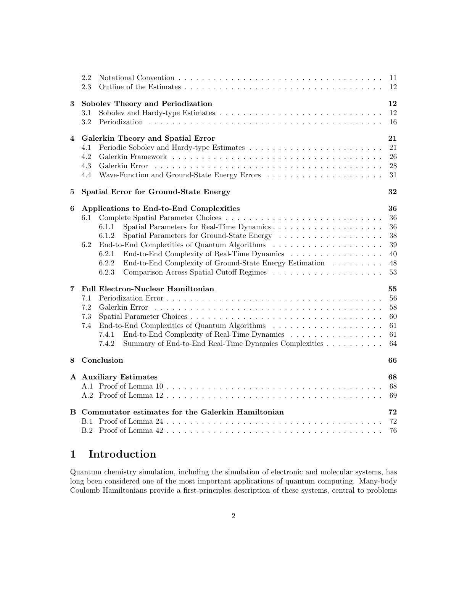
<figcaption class="paper-figure-caption"><b>Fig 1.</b> Low-resolution page preview, page 2</figcaption>
</figure>
<figure class="paper-figure-card">
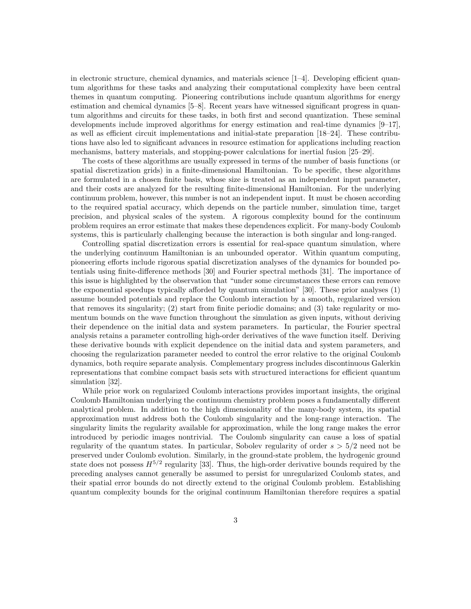
<figcaption class="paper-figure-caption"><b>Fig 2.</b> Low-resolution page preview, page 3</figcaption>
</figure>
<figure class="paper-figure-card">
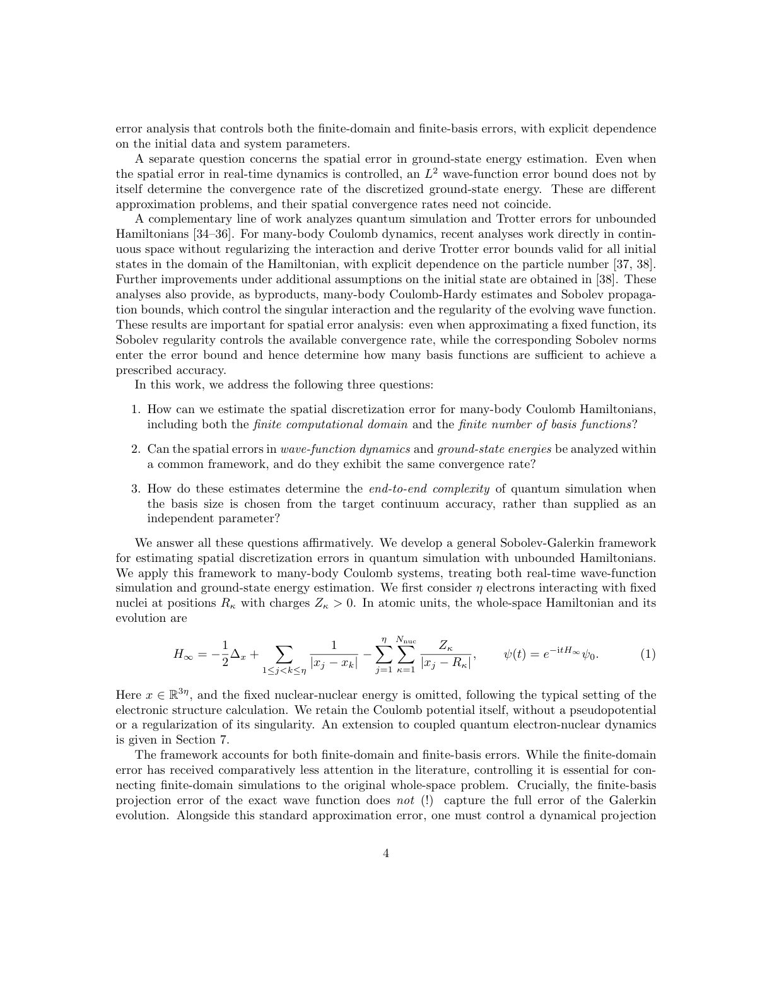
<figcaption class="paper-figure-caption"><b>Fig 3.</b> Low-resolution page preview, page 4</figcaption>
</figure>
<figure class="paper-figure-card">
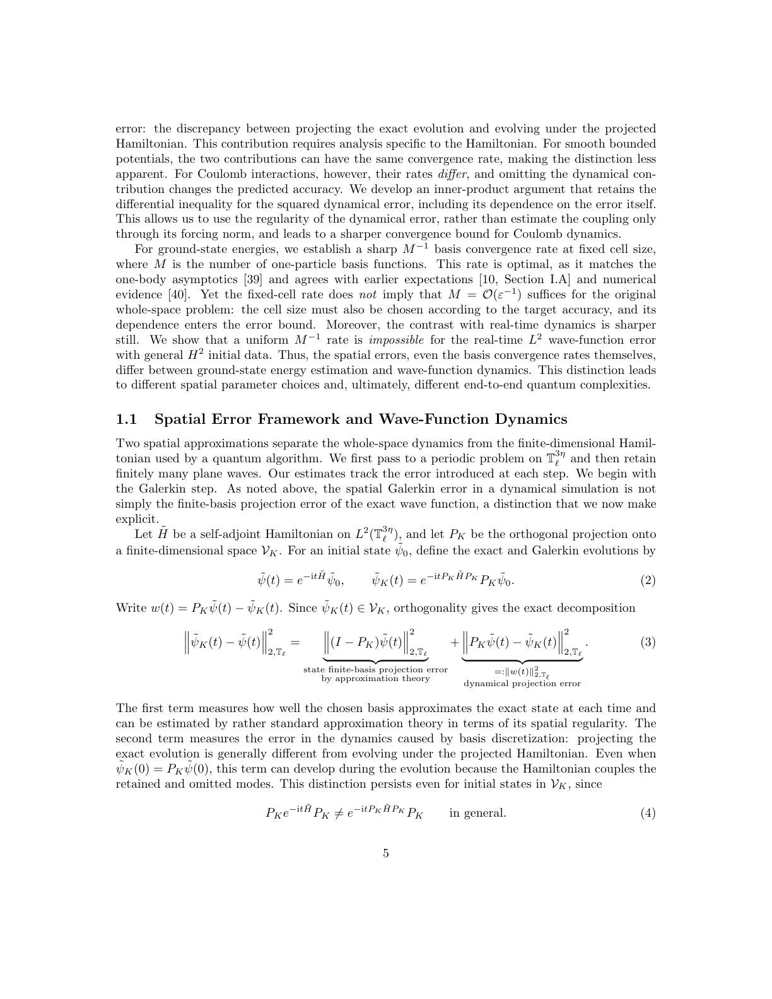
<figcaption class="paper-figure-caption"><b>Fig 4.</b> Low-resolution page preview, page 5</figcaption>
</figure>
<figure class="paper-figure-card">
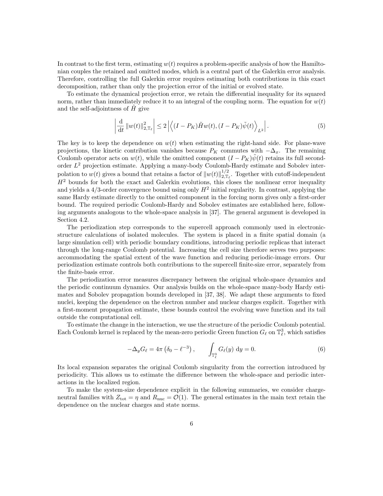
<figcaption class="paper-figure-caption"><b>Fig 5.</b> Low-resolution page preview, page 6</figcaption>
</figure>
</div>
<p><strong>Summary.</strong> This paper develops a rigorous Sobolev-Galerkin framework to quantify spatial discretization errors when simulating quantum chemistry problems involving unbounded Hamiltonians. By analyzing the error sources for both ground-state energies and real-time dynamics, the authors establish sharp convergence rates and provide the first comprehensive complexity bounds for quantum simulation algorithms. This is vital for building reliable quantum computers for molecular physics.</p>
<p><strong>Why it may be interesting.</strong> This work provides crucial theoretical rigor for implementing quantum simulations of molecular and electronic structure, directly addressing the systematic errors that plague current numerical and quantum computational approaches.</p>
<details>
<summary>Detailed structure</summary>
<p><strong>Main problem.</strong> The paper develops a rigorous framework to estimate the spatial discretization errors inherent in approximating continuum quantum problems governed by the Schrödinger equation in unbounded space.</p>
<p><strong>Main result.</strong> It establishes sharp convergence rates for ground-state energies ($M^{-1}$) and provides the first rigorous end-to-end complexity bounds for quantum simulation of molecular dynamics with all spatial errors explicitly controlled.</p>
<p><strong>Method.</strong> The core method is a general Sobolev-Galerkin framework applied to error estimation, decomposing the total error into finite-basis projection and dynamical projection components.</p>
<p><strong>Model / system.</strong> The analysis focuses on many-body Coulomb systems, which are central to nonrelativistic quantum chemistry and electronic structure calculations. The Hamiltonian involves the full-space Coulomb interaction.</p>
<p><strong>Key observables.</strong> Spatial discretization errors for wave-function dynamics and ground-state energies; convergence rates ($M^{-1}$ for ground state, $4/3$-order for dynamics).</p>
<p><strong>Important parameters / regimes.</strong> The number of one-particle basis functions ($M$); the nature of the Coulomb singularity; the required regularity of the initial wave function ($H^2$ data).</p>
<p><strong>Assumptions / limitations.</strong> The analysis requires controlling errors from both the finite computational domain (periodization) and the finite basis set, explicitly handling the singular, long-ranged Coulomb interaction.</p>
<p><strong>Paper structure.</strong> The paper introduces the problem of approximating continuum quantum systems, develops the Sobolev-Galerkin framework, applies it to Coulomb systems, derives separate error bounds for dynamics and ground states, and concludes with complexity bounds for quantum algorithms.</p>
</details>
<details>
<summary>Abstract</summary>
<p>Nonrelativistic quantum chemistry is based on the Schrödinger equation in continuous, unbounded space. Computational approaches on classical and quantum computers often truncate the spatial domain and introduce a finite-dimensional basis, reducing the continuum problem to a finite-dimensional one. There is therefore a fundamental question: to what extent does this approximation capture the original continuum problem? In this work, we develop a general Sobolev-Galerkin framework for estimating spatial discretization errors in quantum simulation with unbounded Hamiltonians. We apply this framework to many-body Coulomb systems and establish both periodization and Galerkin error estimates for wave-function dynamics and ground-state energies. For dynamics, the finite-basis projection error of the exact wave function does not capture the full basis-discretization error: an additional dynamical projection error enters our bound at a different rate, and we introduce an inner-product argument to control this contribution. Interestingly, the spatial convergence rates for wave-function dynamics and ground-state energies differ quantitatively. For ground-state energies, we establish a sharp $M^{-1}$ convergence rate at fixed cell size, where $M$ is the number of one-particle basis functions. We also show that a uniform $M^{-1}$ convergence rate is impossible for the corresponding real-time wave-function error with general $H^2$ initial data. The analysis relies on many-body Sobolev estimates with explicit polynomial dependence on system size. Combining these estimates with state-of-the-art quantum algorithms, we obtain, to our knowledge, the first rigorous end-to-end complexity bounds for quantum simulation of molecular and electronic dynamics with all spatial errors explicitly controlled. The number of basis functions is determined directly from the continuum problem, without regularization.</p>
</details>
<p><sub><a href="#top">↑ back to top</a></sub></p>

<p><a id="paper-2610.25685"></a></p>
<h3 id="subsystem-quantum-renyi-bhattacharyya-distance-in-2d-cfts-and-its-holographic-applications"><a href="http://arxiv.org/abs/2610.25685v1">Subsystem quantum Rényi-Bhattacharyya distance in 2D CFTs and its holographic applications</a></h3>
<p><strong>Authors:</strong> Yihao Wang, Jiaju Zhang<br>
<strong>Type:</strong> theory · <strong>Category:</strong> statistical mechanics · <strong>PDF:</strong> <a href="https://arxiv.org/pdf/2610.25685v1">https://arxiv.org/pdf/2610.25685v1</a><br>
<strong>Analysis basis:</strong> full PDF text, analyzed in chunks</p>
<div class="figure-strip-hint">↔ Scroll figures horizontally</div>
<div class="paper-figures-scroll">
<figure class="paper-figure-card">
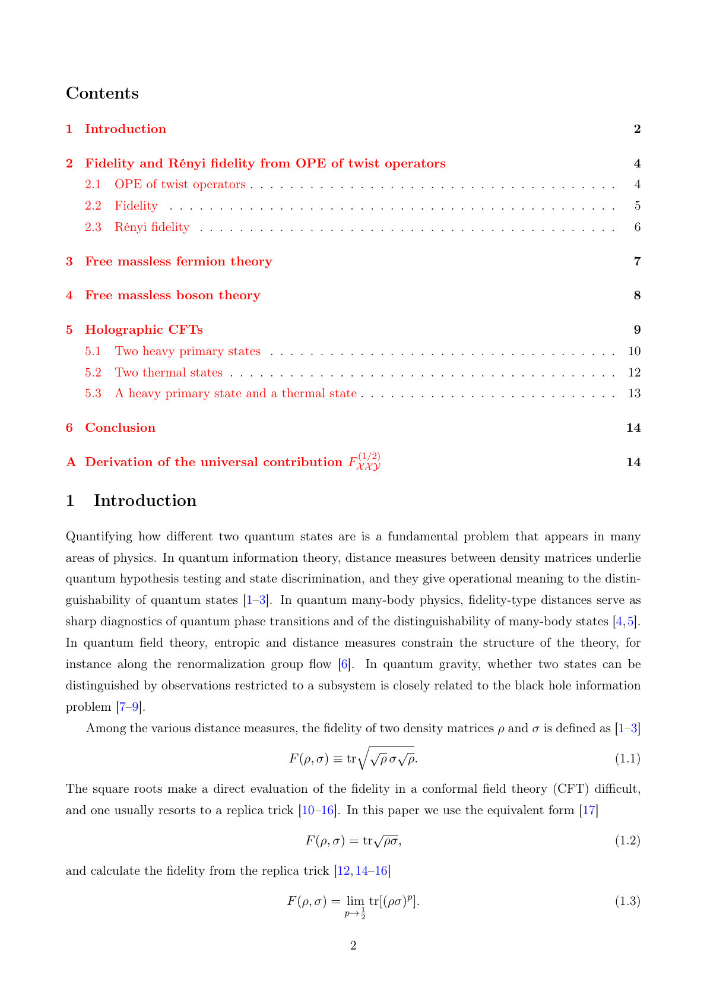
<figcaption class="paper-figure-caption"><b>Fig 1.</b> Low-resolution page preview, page 2</figcaption>
</figure>
<figure class="paper-figure-card">
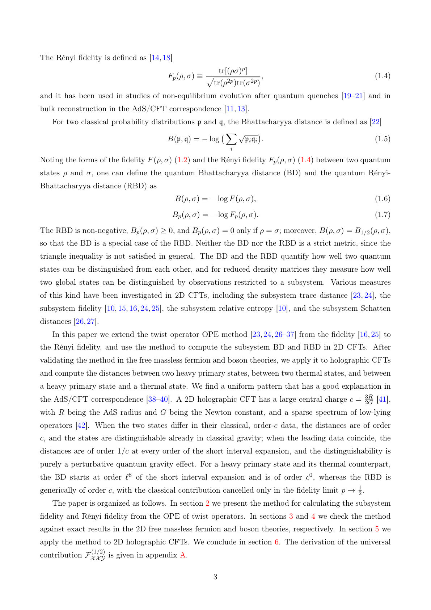
<figcaption class="paper-figure-caption"><b>Fig 2.</b> Low-resolution page preview, page 3</figcaption>
</figure>
<figure class="paper-figure-card">
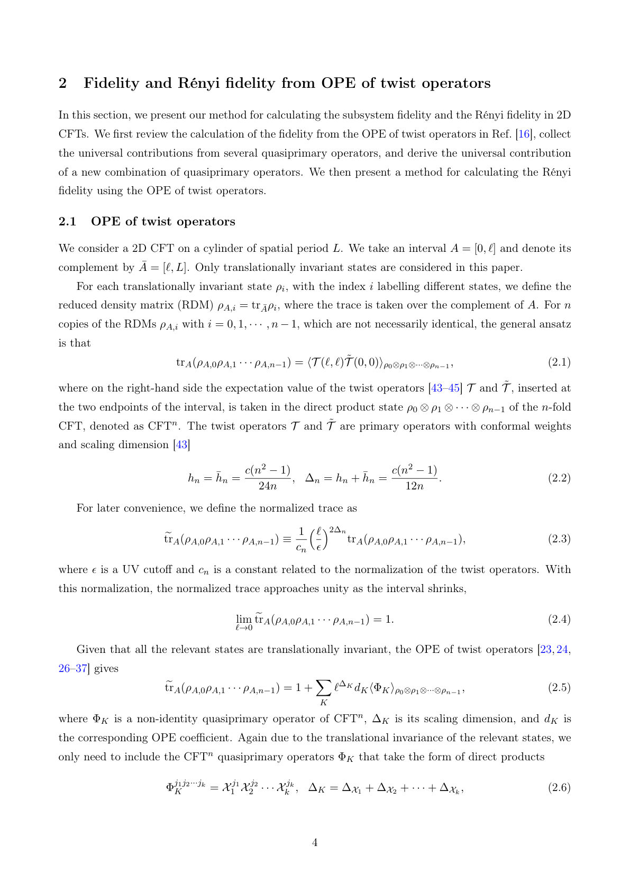
<figcaption class="paper-figure-caption"><b>Fig 3.</b> Low-resolution page preview, page 4</figcaption>
</figure>
<figure class="paper-figure-card">

<figcaption class="paper-figure-caption"><b>Fig 4.</b> Low-resolution page preview, page 5</figcaption>
</figure>
<figure class="paper-figure-card">

<figcaption class="paper-figure-caption"><b>Fig 5.</b> Low-resolution page preview, page 6</figcaption>
</figure>
</div>
<p><strong>Summary.</strong> This paper develops a systematic method using CFT techniques to calculate subsystem quantum distance measures (BD and RBD) for various quantum states. By applying this to holographic CFTs, the authors show that the distinguishability between states can reveal whether the difference is a classical effect or a subtle, perturbative quantum gravity effect.</p>
<p><strong>Why it may be interesting.</strong> The study provides a powerful tool to probe quantum gravity effects by analyzing how quantum information measures reveal differences between states that are classically indistinguishable, which is highly relevant for understanding black hole thermodynamics.</p>
<details>
<summary>Detailed structure</summary>
<p><strong>Main problem.</strong> The paper develops methods to quantify the distinguishability between two quantum states ($
ho$ and $\sigma$) using subsystem quantum distance measures, specifically the Rényi-Bhattacharyya distance (RBD). It investigates how this distinguishability scales in different physical limits.</p>
<p><strong>Main result.</strong> The distinguishability between states depends critically on whether the difference in their defining parameters (e.g., energy or temperature) is of order $c$ (classical) or of order $c_0$ (requiring quantum gravity corrections).</p>
<p><strong>Method.</strong> The core method involves using the Operator Product Expansion (OPE) of twist operators to systematically compute subsystem fidelity and Rényi fidelity, which are then used to define the BD and RBD.</p>
<p><strong>Model / system.</strong> The analysis is performed in two-dimensional Conformal Field Theories (CFTs), with applications to holographic CFTs dual to AdS$_3$/CFT$_2$ correspondence. The states compared include heavy primary states and thermal states.</p>
<p><strong>Key observables.</strong> Subsystem fidelity, Quantum Bhattacharyya distance (BD), and Quantum Rényi-Bhattacharyya distance (RBD).</p>
<p><strong>Important parameters / regimes.</strong> The central parameters are the central charge $c$, the subsystem size $\ell$, and the order of the difference in state parameters (e.g., $   ext{order } c$ vs. $    ext{order } 1/c$).</p>
<p><strong>Assumptions / limitations.</strong> The analysis relies on the short interval expansion in $\ell$ and assumes the applicability of the OPE for calculating correlation functions.</p>
<p><strong>Figures summary.</strong> The notes do not describe specific figures, but mention tables listing quasiprimary operators for free massless fermion and boson theories.</p>
<p><strong>Paper structure.</strong> The paper first introduces the systematic method using OPE for fidelity calculation, validates it against free theories, and then applies it to holographic CFTs to analyze the scaling of BD and RBD for various state pairs (heavy vs. thermal).</p>
</details>
<details>
<summary>Abstract</summary>
<p>We develop a systematic method to compute the subsystem fidelity and Rényi fidelity in two-dimensional conformal field theories (CFTs) from the operator product expansion of twist operators, and apply it to the subsystem quantum Bhattacharyya distance (BD) and Rényi-Bhattacharyya distance (RBD). We validate the method against exact results in the free massless fermion and boson theories, and then use it to compute the BD and RBD in holographic CFTs between two heavy primary states, between two thermal states, and between a heavy primary state and a thermal state. When the two states differ in their classical, order-$c$ data, the distances are of order $c$, and the states are distinguishable already at the level of classical gravity; when the leading data coincide, the distances are of order $1/c$ at every order of the short interval expansion, so that the distinguishability becomes a perturbative quantum gravity effect. For a heavy primary state and its thermal counterpart, the leading contribution to the BD appears at order $\ell^8$ and is of order $c^0$, whereas the RBD is generically of order $c$, in line with the earlier finding that a heavy primary state and a thermal state share the same order-$c$ entanglement entropy but have different order-$c$ Rényi entropies in the short interval expansion.</p>
</details>
<p><sub><a href="#top">↑ back to top</a></sub></p>

<p><a id="paper-2610.25103"></a></p>
<h3 id="the-ericson-transition-in-time-reversal-invariant-systems-orthogonally-invariant-hamiltonians"><a href="http://arxiv.org/abs/2610.25103v1">The Ericson Transition in Time-Reversal Invariant Systems: Orthogonally Invariant Hamiltonians</a></h3>
<p><strong>Authors:</strong> Simon Köhnes, Thomas Guhr<br>
<strong>Type:</strong> theory · <strong>Category:</strong> statistical mechanics · <strong>PDF:</strong> <a href="https://arxiv.org/pdf/2610.25103v1">https://arxiv.org/pdf/2610.25103v1</a><br>
<strong>Analysis basis:</strong> full PDF text, analyzed in chunks</p>
<div class="figure-strip-hint">↔ Scroll figures horizontally</div>
<div class="paper-figures-scroll">
<figure class="paper-figure-card">

<figcaption class="paper-figure-caption"><b>Fig 1.</b> FIG. 1: Numerical simulation and the distributions of rescaled scattering matrix elements (top), full subleading correction for the CDF (mid) and joint distribution (bottom). Ξ = 1.862 and M = 40.</figcaption>
</figure>
<figure class="paper-figure-card">

<figcaption class="paper-figure-caption"><b>Fig 2.</b> FIG. 2: Numerical simulation and the distributions of rescaled scattering–matrix elements (top), cross–sections and joint distribution (bottom). Ξ = 9.23 and M = 60.</figcaption>
</figure>
</div>
<p><strong>Summary.</strong> This theoretical paper analyzes the Ericson transition in quantum scattering systems using random matrix theory. It derives the asymptotic distribution of scattering matrix elements, proving that the leading-order behavior is a universal Gaussian form. This result is significant for understanding quantum chaos in open systems, as it provides a robust prediction applicable across different symmetry classes.</p>
<p><strong>Why it may be interesting.</strong> The universal Gaussian result in the Ericson limit is a powerful prediction of quantum chaos, providing a concrete, analytically derived benchmark for analyzing open quantum systems and scattering phenomena.</p>
<details>
<summary>Detailed structure</summary>
<p><strong>Main problem.</strong> The paper investigates the asymptotic behavior of scattering matrix elements and cross-sections in the Ericson regime for time-reversal invariant quantum systems.</p>
<p><strong>Main result.</strong> The leading-order asymptotic distribution for these observables is found to be universal Gaussian, regardless of the specific Wigner-Dyson symmetry class ($eta=1, 2, 4$).</p>
<p><strong>Method.</strong> The analysis employs advanced random matrix theory techniques, deriving asymptotic expansions for characteristic functions using Laplace-type integrals and Bessel function identities.</p>
<p><strong>Model / system.</strong> The system is modeled by scattering processes analyzed using random matrix theory, specifically considering Hamiltonians from the Gaussian Orthogonal Ensemble (GOE) and its generalizations.</p>
<p><strong>Key observables.</strong> Off-diagonal scattering matrix elements, cross-sections, and their corresponding probability distributions $P_s(\xi_s)$.</p>
<p><strong>Important parameters / regimes.</strong> The dimensionless parameter $\Xi = \Gamma/D$, the symmetry index $eta$, and the channel number $M$.</p>
<p><strong>Assumptions / limitations.</strong> The derivation relies on asymptotic expansions in $1/\Xi$ and the assumption that the relevant contributions come from the 'disconnected part' of the saddle-point manifold.</p>
<p><strong>Figures summary.</strong> Figures illustrate the distributions of rescaled scattering-matrix elements and cross-sections, showing the approach to a universal Gaussian limit as the Ericson parameter $\Xi$ increases.</p>
<p><strong>Paper structure.</strong> The paper progresses by first establishing the mathematical framework for the characteristic functions, deriving the leading-order Gaussian asymptote, and subsequently calculating the subleading corrections and comparing the results across different symmetry classes.</p>
</details>
<details>
<summary>Abstract</summary>
<p>We investigate the distributions of off-diagonal scattering matrix elements and cross-sections in the Ericson regime for systems that are time-reversal and rotationally invariant. In previous works, we developed techniques to analyze the Ericson transition by means of asymptotic expansions in the cases of unitarily and symplectically invariant Hamiltonians. Here, we prove that Gaussian and exponential behavior is found as the leading-order term of an asymptotic expansion of those distributions also in the orthogonal case, which is often the relevant one for analyzing experiments. Moreover, we derive the subleading-order term and compare with numerical simulations. Finally, we discuss similarities and differences of the Ericson transition for all three Wigner-Dyson classes.</p>
</details>
<p><sub><a href="#top">↑ back to top</a></sub></p>

<p><a id="paper-2610.26465"></a></p>
<h3 id="the-four-qubit-hyperbolic-quadric-has-contextuality-degree-315"><a href="http://arxiv.org/abs/2610.26465v1">The Four-Qubit Hyperbolic Quadric Has Contextuality Degree 315</a></h3>
<p><strong>Authors:</strong> Zhengyu Li, Amandeep Gupta, Vijay Ganesh<br>
<strong>Type:</strong> theory · <strong>Category:</strong> quantum information and computing · <strong>PDF:</strong> <a href="https://arxiv.org/pdf/2610.26465v1">https://arxiv.org/pdf/2610.26465v1</a><br>
<strong>Analysis basis:</strong> full PDF text, analyzed in chunks</p>
<div class="figure-strip-hint">↔ Scroll figures horizontally</div>
<div class="paper-figures-scroll">
<figure class="paper-figure-card">

<figcaption class="paper-figure-caption"><b>Fig 1.</b> Figure 1: A doily in Sylvester’s model: the points are the duads ij of {1, . . . , 6} and the lines the synthemes (Lemma 8). The filled points and the coloured lines form the grid of the partition {1, 2, 3} | {4, 5, 6}; the three dashed lines are one of its rulings. By Proposition 14, an optimal assignment violates exactly such a ruling in every doily of the quadric.</figcaption>
</figure>
</div>
<p><strong>Summary.</strong> This paper rigorously calculates the contextuality degree for the four-qubit hyperbolic quadric, proving it to be 315. It achieves this by combining a classical combinatorial lower bound proof with advanced computational methods (SAT solving) to classify the exact structure of the optimal violating sets. The result provides a powerful mathematical tool for understanding fundamental limits on quantum correlations.</p>
<p><strong>Why it may be interesting.</strong> This work provides a deep mathematical characterization of quantum contextuality for multi-qubit systems, linking it directly to advanced topics in finite geometry and coding theory.</p>
<details>
<summary>Detailed structure</summary>
<p><strong>Main problem.</strong> The paper determines the contextuality degree of the four-qubit hyperbolic quadric, which is a measure of quantum contextuality related to Pauli observables.</p>
<p><strong>Main result.</strong> The contextuality degree of the four-qubit hyperbolic quadric $Q^+(7, 2)$ is proven to be exactly 315. Furthermore, the optimal violated sets are characterized as being isomorphic to the dual polar space $DW(5, 2)$.</p>
<p><strong>Method.</strong> The proof combines a short, combinatorial lower bound proof based on averaging over 'doilies' with a computer-assisted classification of the optimal solutions using SAT encoding.</p>
<p><strong>Model / system.</strong> The system is modeled using Pauli observables on $N$ qubits, whose structure is mapped onto the symplectic polar space $W(2N-1, 2)$ and specifically analyzed via the four-qubit hyperbolic quadric $Q^+(7, 2)$.</p>
<p><strong>Key observables.</strong> Contextuality degree, Pauli observables, lines (contexts) of the quadric, and the structure of the violated set ($DW(5, 2)$).</p>
<p><strong>Important parameters / regimes.</strong> Four qubits ($N=4$), 135 points, 1575 lines (contexts), and the degree value of 315.</p>
<p><strong>Assumptions / limitations.</strong> The primary assumption is the mathematical mapping of quantum contextuality to the geometry of the hyperbolic quadric, and the classification of optimal solutions relies on SAT solving techniques.</p>
<p><strong>Figures summary.</strong> Not specified, but the notes reference Table 3 comparing different SAT encodings and Table 4 listing computational running times for refutations and enumerations.</p>
<p><strong>Paper structure.</strong> The paper establishes the contextuality degree by first proving a lower bound using a combinatorial argument involving 'doilies' (GQ(2,2)). It then uses SAT encoding to prove the upper bound and classify the optimal violated sets, culminating in a general lower bound for all quadrics.</p>
</details>
<details>
<summary>Abstract</summary>
<p>The contextuality degree of a set of Pauli contexts is the least number of contexts that every noncontextual $\pm1$ assignment violates. For the four-qubit hyperbolic quadric $\mathcal{Q}^{+}(7,2)$, with $135$ points and $1575$ lines as contexts, Muller et al. conjectured from heuristic searches that the degree is $315$ and that the violated contexts of every optimal assignment form a dual polar space $DW(5,2)$. We prove both conjectures. The lower bound has a short proof by hand: every doily ($GQ(2,2)$) of the quadric contains ten Peres-Mermin grids covering each of its lines four times, so every assignment violates at least three of its fifteen lines, and averaging over the doilies gives $1575/5=315$. The equality case is local: an assignment is optimal exactly when it violates one ruling of one grid in every doily. Using this as a SAT encoding, we show that there are exactly $240$ optimal violated sets, one orbit of $\mathrm{O}^+(8,2)$, each isomorphic to $DW(5,2)$. The same argument gives the first lower bounds $\lceil L/5\rceil$ for all quadrics with $L$ lines in $N\ge4$ qubits. The degree theorem is kernel-checked in Lean 4, and the completeness of the enumeration is certified by a DRAT proof checked by the verified checker cake_lpr.</p>
</details>
<p><sub><a href="#top">↑ back to top</a></sub></p>

<p><a id="paper-2610.25940"></a></p>
<h3 id="the-long-range-ising-cft-perturbative-and-nonperturbative-approaches"><a href="http://arxiv.org/abs/2610.25940v1">The long-range Ising CFT: perturbative and nonperturbative approaches</a></h3>
<p><strong>Authors:</strong> Zechuan Zheng<br>
<strong>Type:</strong> theory · <strong>Category:</strong> statistical mechanics · <strong>PDF:</strong> <a href="https://arxiv.org/pdf/2610.25940v1">https://arxiv.org/pdf/2610.25940v1</a><br>
<strong>Analysis basis:</strong> full PDF text, analyzed in chunks</p>
<div class="figure-strip-hint">↔ Scroll figures horizontally</div>
<div class="paper-figures-scroll">
<figure class="paper-figure-card">

<figcaption class="paper-figure-caption"><b>Fig 1.</b> Figure 1: Descriptions of the critical point in d = 1, J(r) ∝r−(1+s), across the interacting window 0 &lt; ∆σ &lt; 1/4, or 1/2 &lt; s &lt; 1 (lower scale). The ϵ expansion of the perturbed GFF is controlled at the mean-field end, and the expansion of the strong–weak dual in √∆σ at the short-range end. Hamiltonian truncation, NRG and MC are nonperturbative and reach across the window. Shading fades, schematically, where each description loses accuracy. All describe one CFT, so they must give the same ∆E. One dimension is the clearest test of universality, since all five descriptions apply there. In d = 2, 3 the short- range end is described by the expansion about the short-range Ising CFT instead of the...</figcaption>
</figure>
<figure class="paper-figure-card">

<figcaption class="paper-figure-caption"><b>Fig 2.</b> Figure 2: ∆E in d = 1. Left: ∆E across the window; right: the residual 103(∆E −∆res E ) from the resummed curve, for 0.02 ≤∆σ ≤0.25. Purple: the resummed curve (Sec. 3.3), with eight short-range coefficients imposed (CB8, K = 8 in the legend: eight loops, eight coefficients). Blue, left panel: the ϵ series alone, resummed at eight loops (dash-dot) and three loops (dotted). Green squares: Hamiltonian truncation, extrapolated in the cutoff (filled) or at its largest cutoff where it cannot be extrapolated (open). Orange circles: NRG, converged in chain length (filled) or not (open). Diamonds: MC of this work, accepted (black) or not (gray, open; Sec. 3.4), with the statistical error (inner)...</figcaption>
</figure>
<figure class="paper-figure-card">

<figcaption class="paper-figure-caption"><b>Fig 3.</b> Figure 3: ∆E in d = 2 (left) and d = 3 (right). Purple: the resummed curve of Sec. 3.3, which imposes the short-range Ising end, marked by a red star (exact in d = 2, from the bootstrap [34] in d = 3). Blue: the ϵ series alone, resummed at eight loops (dash-dot, CB8 in the legend) and three loops (dotted, CB3). Green squares: Hamiltonian truncation at the largest cutoff, not extrapolated; open squares mark ∆σ = 0.125 and 0.126, where the largest cutoff is smaller. Black diamond: the d = 3 MC value, accepted under an amended fit protocol (Sec. 3.4), with statistical (inner) and fit-model (outer) bars. Other symbols: published MC [20,23–25], one color and shape per reference (legend), with...</figcaption>
</figure>
</div>
<p><strong>Summary.</strong> This paper provides a comprehensive study of the critical behavior of the long-range Ising model by analyzing its associated nonlocal Conformal Field Theory across dimensions 1, 2, and 3. The authors achieve remarkable consistency by comparing results from perturbative expansions, Hamiltonian truncation, and numerical simulations. This convergence of diverse theoretical approaches strongly validates the underlying principles of universality in critical phenomena.</p>
<p><strong>Why it may be interesting.</strong> The rigorous comparison of results from multiple, fundamentally different theoretical frameworks (perturbation theory vs. nonperturbative methods) to confirm universal critical exponents is a powerful theoretical exercise applicable to any complex many-body system.</p>
<details>
<summary>Detailed structure</summary>
<p><strong>Main problem.</strong> The paper investigates the one-parameter family of nonlocal Conformal Field Theories (CFTs) that describe the interacting critical points of the long-range Ising model in dimensions $d=1, 2, 3$.</p>
<p><strong>Main result.</strong> The authors demonstrate remarkable agreement between results obtained from resummed expansions, Hamiltonian truncation, Numerical Renormalization Group (NRG), and Monte Carlo simulations for key critical exponents, confirming the expected universality.</p>
<p><strong>Method.</strong> A combination of advanced theoretical techniques is employed, including $\epsilon$-expansion around the generalized free field, analysis near the short-range limit, and nonperturbative methods like Hamiltonian Truncation.</p>
<p><strong>Model / system.</strong> The primary model is the long-range Ising model, whose critical behavior is described by a nonlocal CFT. The analysis covers the system's behavior across a window of coupling strengths parameterized by $s$.</p>
<p><strong>Key observables.</strong> The primary observable is the scaling dimension of the energy gap ($\Delta E$), and the correlation-length exponent ($
u$).</p>
<p><strong>Important parameters / regimes.</strong> The dimensionality ($d=1, 2, 3$) and the coupling parameter $s$ (which defines the nonlocality) are crucial parameters. The expansion parameters include $\epsilon = 2s-d$.</p>
<p><strong>Assumptions / limitations.</strong> The $\epsilon$-expansion is noted to be asymptotic and controlled only near the mean-field end ($s=d/2$). The comparison of results across multiple methods serves as a strong test of universality.</p>
<p><strong>Figures summary.</strong> The figures illustrate the five descriptions of the critical point in $d=1$ across the interacting window, and tables provide quantitative data for $\Delta E$ in $d=1, 2, 3$ derived from various computational approaches.</p>
<p><strong>Paper structure.</strong> The paper systematically studies the LRI CFT using multiple independent theoretical directions: perturbative expansion (up to eight loops), analysis near the short-range end, and nonperturbative methods like Hamiltonian Truncation. Results are then compared against numerical simulations (NRG/MC) across $d=1, 2, 3$.</p>
</details>
<details>
<summary>Abstract</summary>
<p>The long-range Ising model is the prototype of criticality with power-law interactions. In each dimension its interacting critical points form a one-parameter family of nonlocal conformal field theories, weakly coupled at both ends but not in between. We study this family in one, two and three dimensions from several independent directions. We extend the expansion about the generalized free field from three to eight loops and expand about the short-range end. We show that Hamiltonian truncation applies to this nonlocal theory once a truncation artifact is corrected. Where they can be compared, the resummed expansions, Hamiltonian truncation, the numerical renormalization group and Monte Carlo simulations agree on the dimension of the leading $\mathbb{Z}_2$-even scalar at the sub-percent level, as universality requires.</p>
</details>
<p><sub><a href="#top">↑ back to top</a></sub></p>

<p><a id="paper-2610.24154"></a></p>
<h3 id="translation-invariant-pure-states-with-exotic-half-chain-factors"><a href="http://arxiv.org/abs/2610.24154v1">Translation-Invariant Pure States with Exotic Half-Chain Factors</a></h3>
<p><strong>Authors:</strong> Ruizhi Liu, Jinmin Yi<br>
<strong>Type:</strong> theory · <strong>Category:</strong> statistical mechanics · <strong>PDF:</strong> <a href="https://arxiv.org/pdf/2610.24154v1">https://arxiv.org/pdf/2610.24154v1</a><br>
<strong>Analysis basis:</strong> full PDF text, analyzed in chunks</p>
<div class="figure-strip-hint">↔ Scroll figures horizontally</div>
<div class="paper-figures-scroll">
<figure class="paper-figure-card">

<figcaption class="paper-figure-caption"><b>Fig 1.</b> Fig. 1 Fermi seas of a translation-invariant pure quasifree state of one fermion species. An empty or completely filled band gives a type I half-chain algebra; every partially filled band, with Fermi sea E and its complement of positive measure, gives type III1.</figcaption>
</figure>
<figure class="paper-figure-card">

<figcaption class="paper-figure-caption"><b>Fig 2.</b> Fig. 2 The soft shift Mba acting on a fermion localized at n = 0. The resulting wave function is supported on n ≥0 and decays exponentially with localization length ξ = 1/| log a|.</figcaption>
</figure>
<figure class="paper-figure-card">

<figcaption class="paper-figure-caption"><b>Fig 3.</b> Fig. 3 Exact partial shifts versus soft shifts. Exact shifts give finite-range Bell-pair links; the soft shift Mu produces long wave-packet tails and infinitely many entangled modes across the cut.</figcaption>
</figure>
</div>
<p><strong>Summary.</strong> This theoretical paper constructs exotic pure quantum states on 1D lattices whose entanglement structure (measured by the half-chain von Neumann algebra) can be of Type II$_\infty$ or Type III$_\lambda$, contradicting simple Type I/III$_1$ expectations. By showing that entropy growth rates can be varied independently of the algebra type, it refines our understanding of how entanglement diagnostics relate to the underlying mathematical structure of quantum ground states.</p>
<p><strong>Why it may be interesting.</strong> This work directly challenges fundamental conjectures in the classification of ground states in 1D quantum systems, particularly concerning the relationship between spectral properties (algebra type) and entanglement structure, which is crucial for understanding quantum criticality.</p>
<details>
<summary>Detailed structure</summary>
<p><strong>Main problem.</strong> The paper investigates the relationship between the type of the half-chain von Neumann algebra associated with a pure state and its entanglement properties in 1D quantum systems.</p>
<p><strong>Main result.</strong> It constructs counterexamples showing that the half-chain algebra type (Type II$_\infty$ or Type III$_\lambda$) and the entanglement entropy growth rate can be tuned independently, challenging previous dichotomies.</p>
<p><strong>Method.</strong> The analysis employs advanced techniques from operator algebras, specifically analyzing the structure of the half-chain von Neumann algebra ($\mathcal{M}_R(\omega)$) using quasifree fermionic states and their covariance matrices.</p>
<p><strong>Model / system.</strong> The study focuses on translation-invariant pure quasifree fermionic states on a 1D lattice, which are mapped to pure spin-chain states via the Jordan-Wigner-Araki transformation. The parent Hamiltonians are gapless and have superpolynomially decaying interactions.</p>
<p><strong>Key observables.</strong> Half-chain von Neumann algebra type (Type I, II$_\infty$, III$_\lambda$) and the entanglement entropy growth rate (e.g., area law, logarithmic, power-law).</p>
<p><strong>Important parameters / regimes.</strong> The construction is tunable via the number of fermion species ($
u$), the zeros of a Blaschke product (${a_n}$) controlling correlation lengths, and mixing ratios ($\kappa$) determining the algebra type.</p>
<p><strong>Assumptions / limitations.</strong> The analysis often assumes the existence of a conformal scaling limit for the system, and the dichotomy result applies specifically to gauge-invariant quadratic Hamiltonians with exponentially decaying hopping.</p>
<p><strong>Figures summary.</strong> Figure 1 illustrates the connection between the filled Fermi sea ($E$) and the resulting factor type (Type I vs. Type III$_1$) for a single fermion species.</p>
<p><strong>Paper structure.</strong> The paper first establishes the general framework using quasifree states, presenting the main counterexample (Theorem 1.4) that decouples entropy scaling from algebra type. It then analyzes the specific case of free fermions with exponentially decaying hopping, proving a dichotomy result (Theorem 4.7). The mathematical machinery relies heavily on Hardy spaces and Blaschke products.</p>
</details>
<details>
<summary>Abstract</summary>
<p>We construct translation-invariant pure quasifree fermionic states on the one-dimensional lattice whose half-chain von Neumann algebras are hyperfinite factors of type $\mathrm{II}_\infty$ or $\mathrm{III}_λ$ for any $0<λ\leq 1$. Via the Jordan-Wigner-Araki transformation, these yield translation-invariant pure spin-chain states with the same half-chain factors, demonstrating that such factors need not be of type I or III. Each state is the unique ground state of a gapless, translation-invariant parent Hamiltonian with superpolynomially decaying interactions. For any fixed factor type, the interval entanglement entropy can exhibit widely varying growth rates, from arbitrarily slow divergence to nearly power-law growth, showing that entropy scaling does not determine the factor type. In contrast, we prove that gauge-invariant quadratic Hamiltonians with finitely many flavours and exponentially decaying hopping exhibit a dichotomy: their ground states either satisfy an area law with a type I half-chain factor, or have logarithmic entropy growth with a type $\mathrm{III}_1$ factor. The counterexample was discovered with AI assistance.</p>
</details>
<p><sub><a href="#top">↑ back to top</a></sub></p>

<p><a id="paper-2610.25262"></a></p>
<h3 id="upper-bound-on-the-correlation-energy-of-a-dense-fermi-gas-in-the-thermodynamic-limit"><a href="http://arxiv.org/abs/2610.25262v1">Upper Bound on the Correlation Energy of a Dense Fermi Gas in the Thermodynamic Limit</a></h3>
<p><strong>Authors:</strong> Niels Benedikter, Sascha Lill, Marcello Porta, Benjamin Schlein<br>
<strong>Type:</strong> theory · <strong>Category:</strong> quantum gases · <strong>PDF:</strong> <a href="https://arxiv.org/pdf/2610.25262v1">https://arxiv.org/pdf/2610.25262v1</a><br>
<strong>Analysis basis:</strong> full PDF text, analyzed in chunks</p>
<div class="figure-strip-hint">↔ Scroll figures horizontally</div>
<div class="paper-figures-scroll">
<figure class="paper-figure-card">

<figcaption class="paper-figure-caption"><b>Fig 1.</b> Low-resolution page preview, page 2</figcaption>
</figure>
<figure class="paper-figure-card">

<figcaption class="paper-figure-caption"><b>Fig 2.</b> Low-resolution page preview, page 3</figcaption>
</figure>
<figure class="paper-figure-card">

<figcaption class="paper-figure-caption"><b>Fig 3.</b> Low-resolution page preview, page 4</figcaption>
</figure>
<figure class="paper-figure-card">

<figcaption class="paper-figure-caption"><b>Fig 4.</b> Low-resolution page preview, page 5</figcaption>
</figure>
<figure class="paper-figure-card">

<figcaption class="paper-figure-caption"><b>Fig 5.</b> Low-resolution page preview, page 6</figcaption>
</figure>
</div>
<p><strong>Summary.</strong> This paper establishes a rigorous upper bound for the correlation energy of a dense, weakly interacting Fermi gas using the Random Phase Approximation (RPA). The authors employ advanced techniques involving Bogoliubov transformations and Duhamel expansions to simplify the complex many-body Hamiltonian. The result provides a crucial theoretical benchmark for understanding quantum correlations in high-density quantum systems.</p>
<p><strong>Why it may be interesting.</strong> The rigorous mathematical treatment of correlation energy bounds in a Fermi gas is foundational for understanding strongly interacting quantum matter, providing theoretical benchmarks for comparisons with experimental results from ultracold atomic gases.</p>
<details>
<summary>Detailed structure</summary>
<p><strong>Main problem.</strong> To rigorously prove that the Random Phase Approximation (RPA) provides an upper bound on the correlation energy of a three-dimensional, weakly interacting, Fermi gas in the thermodynamic limit at high density.</p>
<p><strong>Main result.</strong> The ground state energy density is bounded by the sum of the non-interacting energy density, the RPA energy density, and a vanishing error term in the thermodynamic limit.</p>
<p><strong>Method.</strong> The proof constructs a correlated trial state via a quasi-bosonic Bogoliubov transformation of collective particle-hole excitations, followed by an iterated Duhamel expansion to reduce the Hamiltonian to an effective quadratic form.</p>
<p><strong>Model / system.</strong> The system is a gas of $N$ fermions on a 3D torus $\mathbb{T}^3_L$, governed by a Hamiltonian involving kinetic and density-dependent interaction terms. The analysis focuses on the high-density scaling limit.</p>
<p><strong>Key observables.</strong> Correlation Energy, Ground State Energy Density ($e_{GS}$), RPA Energy Density ($e_{RPA}$)</p>
<p><strong>Important parameters / regimes.</strong> Density ($\rho$), Fermi momentum scale, Thermodynamic limit ($L \to \infty$), High-density scaling regime.</p>
<p><strong>Assumptions / limitations.</strong> The analysis assumes a mean-field scaling regime and relies on controlling the position-space localization of collective excitations, leading to the reduction to an effective quadratic Hamiltonian.</p>
<p><strong>Paper structure.</strong> The paper systematically proceeds by constructing the correlated trial state, mapping operators to position space, bounding the number of excitations, reducing the Hamiltonian to a quadratic form, and finally extracting the RPA energy bound.</p>
</details>
<details>
<summary>Abstract</summary>
<p>We prove that the random phase approximation provides an upper bound on the correlation energy of a three-dimensional, weakly interacting, Fermi gas in the thermodynamic limit at high density. More precisely, we consider a mean-field scaling regime where the kinetic and interaction Hamiltonian are scaled by $ρ^{-2/3}$ and $ρ^{-1}$, respectively. We use a correlated trial state constructed through a quasi-bosonic Bogoliubov transformation of collective particle--hole excitations associated to patches on the Fermi surface. Key of the proof is to control the position-space localization of the collective excitations. Combined with an iterated Duhamel expansion of the expectation values of (localized) particle number operators we obtain extensive estimates, which justify the reduction to an effective quadratic Hamiltonian and its approximate diagonalization.</p>
</details>
<p><sub><a href="#top">↑ back to top</a></sub></p>
</details>
<h2 id="secondary-cond-mat-archives">Secondary cond-mat archives</h2>
<p><em>Papers from cond-mat.mtrl-sci, mes-hall, other, soft, supr-con. These archives are de-prioritized — they appear at the end regardless of relevance score.</em></p>
<h3 id="relevant-in-secondary-archives-25">Relevant in secondary archives (25)</h3>

<p><a id="paper-2610.24242"></a></p>
<h3 id="a-chiral-superlattice-route-to-spin-split-topological-antiferromagnetism">⭐ <a href="http://arxiv.org/abs/2610.24242v1">A Chiral Superlattice Route to Spin-Split Topological Antiferromagnetism</a></h3>
<p><strong>Highlighted author(s):</strong> Mikhail D. Lukin<br>
<strong>Authors:</strong> Thao Dinh, Mengke Liu, Jian-Xiang Qiu, Sougata Mardanya, Suk Hyun Sung, Xuan Hoang Le, Christopher Broyles, Chengfeng Zhu, Qiaozhi Xu, Haotian Chen, Zack Rehfuss, Yu-Fei Liu, Xiaoyu Zeng, Houchen Li, Peng Guo, Jinchen Liu, Tianye Huang, Jingtian Shi, Michael Smith, Joanna M. Blawat, John Singleton, Ross McDonald, Ivan E. Arvizo, Dongtao Cui, Shao-Liang Zheng, Kenji Watanabe, Takashi Taniguchi, Vineet Kumar Sharma, Sudip Ghorai, Barun Ghosh, Hsin Lin, Ting Yong Lim, Tay-Rong Chang, Arun Bansil, Ivar Martin, Ashvin Vishwanath, Weiwei Xie, Claudia Felser, Jairo Sinova, Anyuan Gao, Mikhail D. Lukin, Jennifer E. Hoffman, Sugata Chowdhury, Qiong Ma, Kai Sun, Ismail El Baggari, Sheng Ran, Talieh S. Ghiasi, Hongkun Park, Philip Kim, Su-Yang Xu<br>
<strong>Type:</strong> both · <strong>Category:</strong> strongly correlated electrons · <strong>PDF:</strong> <a href="https://arxiv.org/pdf/2610.24242v1">https://arxiv.org/pdf/2610.24242v1</a><br>
<strong>Analysis basis:</strong> full PDF text, analyzed in chunks</p>
<div class="figure-strip-hint">↔ Scroll figures horizontally</div>
<div class="paper-figures-scroll">
<figure class="paper-figure-card">

<figcaption class="paper-figure-caption"><b>Fig 1.</b> FIG. 1: Discovery of natural superlattice with 2D planar chirality in the collinear AFM UOTe.</figcaption>
</figure>
<figure class="paper-figure-card">

<figcaption class="paper-figure-caption"><b>Fig 2.</b> FIG. 2: Chiral supermodulation generates strong Berry curvature. a, The conduction electrons</figcaption>
</figure>
<figure class="paper-figure-card">

<figcaption class="paper-figure-caption"><b>Fig 3.</b> FIG. 3: Chiral superlattice plus AFM generates large anomalous Hall angle. a, The collinear</figcaption>
</figure>
<figure class="paper-figure-card">

<figcaption class="paper-figure-caption"><b>Fig 4.</b> FIG. 4: Spin-polarized current from the chiral supermodulated collinear antiferromagnetism.</figcaption>
</figure>
<figure class="paper-figure-card">

<figcaption class="paper-figure-caption"><b>Fig 5.</b> FIG. 5: Formation mechanism and design principle for chiral supermodulations. a, The chiral</figcaption>
</figure>
</div>

<p><strong>Summary.</strong> This work reports discovering a chiral superlattice in the antiferromagnet UOTe, which acts as a structural template to induce topological electronic properties. By coupling this structural chirality to the intrinsic antiferromagnetism, the authors demonstrate the generation of a large anomalous Hall effect and spin-polarized current. This establishes a general design principle for engineering quantum geometry in real materials.</p>
<p><strong>Why it may be interesting.</strong> The explicit connection between real-space structural engineering (superlattice formation) and the emergence of quantized topological responses (Berry curvature, AHE) provides a powerful, chemically tunable pathway for realizing exotic quantum states.</p>
<details>
<summary>Detailed structure</summary>
<p><strong>Main problem.</strong> The paper investigates the interplay between chirality and magnetism to achieve spin-split topological phenomena in an antiferromagnet.</p>
<p><strong>Main result.</strong> The spontaneous formation of a chiral superlattice in UOTe generates a large Berry curvature dipole, leading to a giant anomalous Hall angle and spin-polarized current.</p>
<p><strong>Method.</strong> The study combines experimental techniques (TEM, NLH effect, spin Hanle precession) with theoretical modeling (DFT, tight-binding) to link structural chirality to topological electronic responses.</p>
<p><strong>Model / system.</strong> The system is the antiferromagnet UOTe, which spontaneously develops a chiral superlattice structure due to bond-mismatch effects. This structure modulates the electronic Bloch wavefunction, leading to topological properties.</p>
<p><strong>Key observables.</strong> Giant anomalous Hall angle (~0.14), finite Berry curvature dipole (detected by NLH effect), and measurable spin-polarized current via Hanle precession.</p>
<p><strong>Important parameters / regimes.</strong> Temperature near the Néel temperature ($T_N$), superlattice wavevector ($\vec{q}$), and the energy competition between interlayer and intralayer bonding.</p>
<p><strong>Assumptions / limitations.</strong> The superlattice formation is driven by chemical ion size and physical interlayer-intralayer energy competitions, leading to a bond-mismatch mechanism.</p>
<p><strong>Figures summary.</strong> Figures illustrate the structural confirmation of the superlattice via atomic displacements, the generation of Berry curvature via the nonlinear Hall effect, and the resulting anomalous Hall and spin-polarized transport signals.</p>
<p><strong>Paper structure.</strong> The argument progresses from identifying the structural superlattice $
ightarrow$ demonstrating its symmetry-breaking, chiral nature $
ightarrow$ linking this structural feature to the generation of Berry curvature and topological magnetic responses (AHE, spin current).</p>
</details>
<details>
<summary>Abstract</summary>
<p>The interplay between chirality and magnetism is a profound topic, spanning particle physics, condensed matter, chemistry and origin of life. In this paper, we study this interplay in the new antiferromagnet (AFM) UOTe, and we report a chiral superlattice route to spin-split topological phenomena from collinear antiferromagnetism. Pristine UOTe is a collinear AFM without Berry curvature or spin-split bands. However, we identify the spontaneous formation of a chiral superlattice in UOTe, which can be viewed as frozen chiral phonons at finite wave vector. When electrons move through the chiral superlattice, their orbital Bloch wavefunction and quantum geometry are modulated by the strong chiral superlattice potential, generating large Berry curvature in the chiral superlattice, which we detect by the nonlinear Hall effect. At 150 K, the chiral superlattice induced Berry curvature couples to the collinear AFM order, generating a giant anomalous Hall angle ~0.14 abruptly near $T_N$ that is among the largest in bulk magnets. Moreover, our spin Hanle precession measurement shows that the chiral superlattice also generates spin-polarized current from the collinear AFM, a long-standing goal in spintronics. We shed light on the supermodulation formation mechanism based on chemical ion size and physical interlayer-intralayer energy competitions, using which we propose a design principle to discover similar bond-mismatch superlattices, providing a chiral superlattice pathway through real space engineering of quantum geometry.</p>
</details>
<p><sub><a href="#top">↑ back to top</a></sub></p>

<p><a id="paper-2610.25859"></a></p>
<h3 id="effects-of-nonmagnetic-impurities-on-nonequilibrium-phase-transitions-in-microwave-driven-superconductors"><a href="http://arxiv.org/abs/2610.25859v1">Effects of Nonmagnetic Impurities on Nonequilibrium Phase Transitions in Microwave-Driven Superconductors</a></h3>
<p><strong>Authors:</strong> Taira Kawamura<br>
<strong>Type:</strong> theory · <strong>Category:</strong> statistical mechanics · <strong>PDF:</strong> <a href="https://arxiv.org/pdf/2610.25859v1">https://arxiv.org/pdf/2610.25859v1</a><br>
<strong>Analysis basis:</strong> full PDF text, analyzed in chunks
<strong>Topic relevance:</strong> 🔥 <code>Keldysh / 2PI / non-Gaussian methods</code> <strong>4/5</strong> · 🔥 <code>driven-dissipative phase transition</code> <strong>4/5</strong> · <code>methods for driven-dissipative</code> <strong>3/5</strong> · <code>non-equilibrium universality</code> <strong>3/5</strong> · <code>correlated / nonlocal dissipation</code> <strong>1/5</strong></p>
<div class="figure-strip-hint">↔ Scroll figures horizontally</div>
<div class="paper-figures-scroll">
<figure class="paper-figure-card">

<figcaption class="paper-figure-caption"><b>Fig 1.</b> FIG. 1. Temperature dependence of the time-averaged super- conducting order parameter ∆0(T ) for several values of the impurity-scattering time ˜τ. The solid and dashed curves rep- resent stable and unstable solutions, respectively, while the dotted curve shows the equilibrium order parameter ∆eq(T ). In the absence of impurity scattering (˜τ = ∞), ∆0(T ) is single-valued. At intermediate impurity scattering (˜τ = 25), two additional folds produce a nested multivalued structure with bistability between two superconducting states. At stronger impurity scattering (˜τ = 3), the low-gap stable branch disappears, leaving bistability between the supercon- ducting and normal states. The drive...</figcaption>
</figure>
<figure class="paper-figure-card">

<figcaption class="paper-figure-caption"><b>Fig 2.</b> FIG. 2. Microwave-induced enhancement and nonequilib- rium phase structure in the strong-scattering regime (˜τ = 3). (a) Microwave-induced change in the time-averaged super- conducting order parameter, as quantified by δ∆defined in Eq. (38), in the T –Ωplane. The red and blue regions corre- spond to enhancement (δ∆&gt; 0) and suppression (δ∆&lt; 0), respectively. The gray-shaded region denotes the normal phase, where no superconducting solution is obtained. (b) Nonequilibrium phase diagram near T c eq. (c) Temperature dependence of the time-averaged order parameter ∆0(T ) at Ω/∆eq(0) = 0.3. The horizontal dotted line marks the single- photon pair-breaking threshold, 2∆0 = Ω.</figcaption>
</figure>
<figure class="paper-figure-card">

<figcaption class="paper-figure-caption"><b>Fig 3.</b> FIG. 3. Nonequilibrium quasiparticle redistribution underly- ing the microwave-induced enhancement. (a) Time-averaged nonequilibrium distribution function fneq(ω) compared with the equilibrium Fermi–Dirac distribution feq(ω). (b) Drive- induced change δf(ω) = fneq(ω) −feq(ω) above the equilib- rium gap edge. (c) Weighted distribution change K(E) de- fined in Eq. (45). The region with K(E) &lt; 0 near the gap edge (blue shaded area) gives a positive contribution to the order parameter, whereas the region with K(E) &gt; 0 at higher energies (orange shaded area) gives a negative contribution. We set T/T c eq = 0.8 and Ω/∆eq(0) = 0.4.</figcaption>
</figure>
<figure class="paper-figure-card">

<figcaption class="paper-figure-caption"><b>Fig 4.</b> FIG. 4. Dependence of δ∆on the drive frequency Ωat T/T c eq = 0.8. The vertical axis uses a symmetric logarith- mic scale. The solid and dashed curves correspond to ˜τ = 3 and ˜τ = ∞, respectively. For ˜τ = 3, the weak dip around Ω= ∆eq(T ) and the strong suppression near Ω= 2∆eq(T ) are associated with two-photon and single-photon pair break- ing, respectively.</figcaption>
</figure>
<figure class="paper-figure-card">

<figcaption class="paper-figure-caption"><b>Fig 5.</b> FIG. 5. Nonequilibrium phase diagram and bifurcation struc- ture in the intermediate-scattering regime (˜τ = 25). (a) Phase diagram in the T –Ωplane. The yellow-shaded re- gion corresponds to bistability between the superconducting and normal states, while the red-shaded region corresponds to bistability between two superconducting states with differ- ent values of ∆0. (b1), (b2) Bifurcation diagrams of ∆0(T ) at Ω/∆eq(0) = 0.4 and 0.6, respectively. The solid red curves represent stable superconducting solutions, while the black dashed curves represent unstable solutions. The dotted curves show the equilibrium order parameter ∆eq(T ), and the hor- izontal lines mark the single-photon...</figcaption>
</figure>
</div>

<p><strong>Summary.</strong> This theoretical work analyzes how microwave driving and nonmagnetic impurities affect the superconducting state in a BCS superconductor. Using advanced Green's function techniques, the authors map out a complex phase diagram showing that impurities are not merely perturbative corrections but fundamentally change the nature of the superconducting phase transition. This highlights the competition between microwave-induced enhancement and pair-breaking effects.</p>
<p><strong>Why it may be interesting.</strong> The study provides a detailed, non-equilibrium analysis of superconductivity, which is highly relevant to open quantum systems and driven many-body physics, showing how external driving and disorder compete to define the ground state.</p>
<details>
<summary>Detailed structure</summary>
<p><strong>Main problem.</strong> The study investigates the nonequilibrium steady states of a BCS superconductor driven by microwave radiation, focusing specifically on how nonmagnetic impurities alter the nature of the superconducting phase transitions.</p>
<p><strong>Main result.</strong> The impurity scattering strength critically determines the phase transition character: weak scattering yields single-valued order parameters, intermediate scattering shows bistability between enhanced/suppressed states, and strong scattering leads to bistability between superconducting and normal states.</p>
<p><strong>Method.</strong> The authors employ the Floquet-Nambu-Keldysh Green's function method combined with the self-consistent Born approximation to solve the non-equilibrium dynamics.</p>
<p><strong>Model / system.</strong> The system is a BCS superconductor subjected to a time-periodic microwave drive, nonmagnetic impurity scattering, and energy relaxation modeled via coupling to a fermionic reservoir.</p>
<p><strong>Key observables.</strong> Superconducting order parameter ($\Delta_0(T)$), nonequilibrium phase diagram, and the transition between different stable states.</p>
<p><strong>Important parameters / regimes.</strong> Impurity-scattering strength ($ ilde{   au}$), microwave drive frequency ($\Omega$), and temperature ($T$).</p>
<p><strong>Assumptions / limitations.</strong> The inelastic relaxation is modeled phenomenologically using a fermionic reservoir, and the analysis relies on solving the Dyson-Keldysh equations in the Floquet basis.</p>
<p><strong>Figures summary.</strong> Figure 1 illustrates the temperature dependence of the order parameter for varying impurity strengths, showing the shift from single-valued to bistable superconducting/normal states. Figure 2 shows the microwave-induced change in the gap ($\delta\Delta$) in the T-$\Omega$ plane.</p>
<p><strong>Paper structure.</strong> The paper develops the full Green's function formalism, applies Floquet theory to handle the time periodicity, incorporates impurity self-energies via the Born approximation, and solves the resulting self-consistent gap equations iteratively to map out the phase diagram.</p>
</details>
<details>
<summary>Abstract</summary>
<p>We investigate the nonequilibrium steady states of a microwave-driven BCS superconductor in the presence of nonmagnetic impurity scattering and energy relaxation. Using the Floquet-Nambu-Keldysh Green's function method together with the self-consistent Born approximation, we self-consistently determine the superconducting order parameter in the microwave-driven steady state. We find that the nonequilibrium phase diagram depends strongly on the impurity-scattering strength. When impurity scattering is absent or weak, the steady-state order parameter is single-valued at each temperature and drive frequency. At intermediate scattering strengths, we find bistability between microwave-enhanced and microwave-suppressed superconducting states. As the impurity-scattering strength increases further, we instead find bistability between the superconducting and normal states. This evolution reflects competition between two effects of microwave driving: Eliashberg-type enhancement through the redistribution of thermally excited quasiparticles and suppression through pair-breaking-induced quasiparticle generation. In contrast to the robustness of equilibrium $s$-wave superconductivity against nonmagnetic impurity scattering, our results demonstrate that nonmagnetic impurity scattering plays a central role in determining the character of nonequilibrium superconducting phase transitions under microwave driving.</p>
</details>
<p><sub><a href="#top">↑ back to top</a></sub></p>

<p><a id="paper-2610.25079"></a></p>
<h3 id="dynamic-hotspot-migration-and-self-induced-resonances-in-ultrafast-laser-irradiated-silicon-thin-films"><a href="http://arxiv.org/abs/2610.25079v1">Dynamic Hotspot Migration and Self-Induced Resonances in Ultrafast Laser-Irradiated Silicon Thin Films</a></h3>
<p><strong>Authors:</strong> George D. Tsibidis, Yi Wang, Emmanuel Stratakis<br>
<strong>Type:</strong> theory · <strong>Category:</strong> other · <strong>PDF:</strong> <a href="https://arxiv.org/pdf/2610.25079v1">https://arxiv.org/pdf/2610.25079v1</a><br>
<strong>Analysis basis:</strong> full PDF text, analyzed in chunks
<strong>Topic relevance:</strong> <code>Keldysh / 2PI / non-Gaussian methods</code> <strong>3/5</strong> · <code>driven-dissipative phase transition</code> <strong>3/5</strong> · <code>interference shaping light</code> <strong>3/5</strong> · <code>methods for driven-dissipative</code> <strong>3/5</strong> · <code>analog quantum simulation</code> <strong>2/5</strong> · <code>non-equilibrium universality</code> <strong>2/5</strong> · <code>quantum measurements</code> <strong>2/5</strong> · <code>correlated / nonlocal dissipation</code> <strong>1/5</strong></p>
<div class="figure-strip-hint">↔ Scroll figures horizontally</div>
<div class="paper-figures-scroll">
<figure class="paper-figure-card">

<figcaption class="paper-figure-caption"><b>Fig 1.</b> Figure 1: SOI’s (a) Architecture, (b) Reflectivity/Transmissivity (at room temperature) and (c) Absorptivity. picosecond reconfiguration of the resonant cavity 17, 18. This discrepancy leads to a fundamental inability to predict the exact depth of material modification in high-precision manufacturing. To address this challenge, via the implementation of a self-consistent dynamic multireflection theory, we resolve the underlying physical mechanism that characterises the transition between resonant regimes, revealing that energy deposition is not a static state but a dynamic evolution. This work reports on the identification of three distinct physical regimes of energy localization in Si thin...</figcaption>
</figure>
<figure class="paper-figure-card">

<figcaption class="paper-figure-caption"><b>Fig 2.</b> Figure 2: Spatio-temporal distribution of the intensity inside Si for F=0.4 J/cm2 (first row) and F=0.7 J/cm2 (second row) for d=100, 230, 350 nm. Simulation results illustrated in Figure 2 show that at a moderate incident fluence of 0.4 J/cm² (Figures 2a-c), the energy deposition is mainly regulated by the formation of internal standing waves where the spatial intensity profile is a function of the film’s cavity order m. Because the refractive index of the silicon remains higher than that of the fused silica substrate (i.e. nSi&gt;nSiO2), Fresnel reflection at the Si/SiO2 interface occurs with a zero-phase shift. This boundary condition enforces a displacement antinode at the Si/SiO₂...</figcaption>
</figure>
<figure class="paper-figure-card">

<figcaption class="paper-figure-caption"><b>Fig 3.</b> Figure 3: Spatio-temporal distribution of carrier density inside Si for F=0.4 J/cm2 (first row) and F=0.7 J/cm2 (second row) for d=100, 230, 350 nm. For the 230 nm Si film at 0.4 J/cm² (Figure 2b), the energy deposition is manifested as a binodal shape, functioning as a half- wave (λL/(2nSi)) resonant cavity. The zero-phase-shift reflection exhibits a displacement antinode at the Si/SiO2 boundary (z=230 nm). Unlike the sub-wavelength 100 nm film, the 230 nm thickness provides sufficient optical path length to accommodate a full nodal transition. As a result, a destructive interference node is resolved in the central region (z~155 nm), followed by a secondary antinode at z~84 nm. This...</figcaption>
</figure>
<figure class="paper-figure-card">

<figcaption class="paper-figure-caption"><b>Fig 4.</b> Figure 4: Spatio-temporal distribution of refractive Index for F=0.4 0.7 J/cm2 (first row) and F=0.7 J/cm2 (second row) for d=100, 230, 350 nm. Finally, for the 350 nm Si film at 0.7 J/cm² (Figure 2f), the high-order resonant regime is fundamentally altered by extinction- induced reduction and nonlinear hotspot migration. The enhanced photoexcitation leads to a large decrease of the refractive index toward transient values of nSi ~1.9-2.1, while simultaneously triggering a remarkable rise in the internal extinction coefficient. The reduction in the refractive index physically stretches the internal standing wave as the internal wavelength expands to ~515 nm. In these conditions, the energy...</figcaption>
</figure>
<figure class="paper-figure-card">

<figcaption class="paper-figure-caption"><b>Fig 5.</b> Figure 5: Spatio-temporal distribution of lattice temperature for F=0.4 J/cm2 (first row) and F=0.7 J/cm2 (second row) for d=100, 230, 350 nm. where temperatures remain close to ambient. This depth-dependent partitioning is further extended in the 350 nm film, which manifests a volumetric thermal grating composed of three distinct heating layers. By contrast, the transition to the 0.7 J/cm² regime (Figures 5d-f) exhibits a fundamentally different configuration of the thermal energy of the lattice system, dictated by the onset of plasma shielding and nonlinear hotspot migration. In the 100 nm case, the lattice reaches extremely high temperatures exceeding 6000 K at both the interface and the...</figcaption>
</figure>
</div>

<p><strong>Summary.</strong> This work models how ultrafast laser pulses interact with silicon thin films, showing that energy deposition is governed by dynamic resonances influenced by free carrier generation. By controlling the laser fluence, researchers can switch the energy deposition from deep subsurface structuring to surface-only modification, enabling advanced, depth-controlled nanomanufacturing techniques.</p>
<p><strong>Why it may be interesting.</strong> The dynamic coupling between carrier dynamics and the optical response (refractive index modulation) provides a rich, non-equilibrium system analogous to open quantum systems where the environment (plasma) actively modifies the system's Hamiltonian (optical properties).</p>
<details>
<summary>Detailed structure</summary>
<p><strong>Main problem.</strong> The study investigates how the spatial energy distribution in silicon thin films changes when irradiated by ultrafast lasers, focusing on the interplay between carrier-induced refractive index changes and self-induced Fabry-Pérot resonances.</p>
<p><strong>Main result.</strong> The energy deposition can be dynamically controlled by modulating the laser fluence, allowing a transition between subsurface resonant structuring and surface-limited plasma shielding.</p>
<p><strong>Method.</strong> The research employs self-consistent dynamic multireflection theory, coupling carrier excitation, the two-temperature model, and dynamic electromagnetic simulations.</p>
<p><strong>Model / system.</strong> The system involves Silicon-on-Insulator (SOI) architectures with thicknesses ranging from 100 nm to 350 nm, irradiated by femtosecond laser pulses.</p>
<p><strong>Key observables.</strong> Energy deposition profile (intensity distribution), carrier density ($N_e$), refractive index ($n_{Si}$), and lattice temperature.</p>
<p><strong>Important parameters / regimes.</strong> Laser fluence ($0.4$ and $0.7$ J/cm$^2$), film thickness ($100, 230, 350$ nm), and carrier-induced refractive index collapse.</p>
<p><strong>Assumptions / limitations.</strong> The model assumes films are much smaller than the laser spot radius, allowing for 1D modeling along the propagation axis.</p>
<p><strong>Figures summary.</strong> Figures illustrate the spatio-temporal intensity and carrier density distributions for various thicknesses and fluences, showing the evolution of hotspots and the transition between different energy localization regimes.</p>
<p><strong>Paper structure.</strong> The paper progresses by analyzing different film thicknesses (interface-localized, binodal, multi-nodal) under varying fluences, demonstrating the dynamic hotspot migration effect, and concluding with the physical basis for depth-resolved laser nanomanufacturing.</p>
</details>
<details>
<summary>Abstract</summary>
<p>The spatial distribution of energy in silicon thin films under femtosecond laser irradiation is demonstrated to be influenced by the interaction between carrier-induced refractive index modulation and self-induced Fabry-Pérot resonances. We resolve three characteristic excitation regions such as interface-localized, binodal and multi-nodal regimes considering the analysis of silicon-on-insulator (SOI) configurations across thicknesses of 100, 230, and 350 nm. We report a nonlinear hotspot migration effect where the transient reduction of the refractive index stretches the internal standing wave, translating intensity antinodes toward the film volume during the pulse. Numerical results demonstrate that at higher fluences, plasma-induced extinction suppresses internal reflections, triggering a transition from resonance-mediated absorption to plasma shielding. These findings establish a physical basis for depth-resolved modification in laser nanomanufacturing, providing a dual-capacity for simultaneous surface patterning and depth-resolved subsurface modification with direct applications in laser-assisted interfacial separation and 3D integrated photonic fabrication.</p>
</details>
<p><sub><a href="#top">↑ back to top</a></sub></p>

<p><a id="paper-2610.24460"></a></p>
<h3 id="water-driven-porous-silicon-as-a-platform-for-blue-materials"><a href="http://arxiv.org/abs/2610.24460v1">Water-Driven Porous Silicon as a Platform for Blue Materials</a></h3>
<p><strong>Authors:</strong> Marc Thelen, Julia Brandt, Stella Gries, Manuel Brinker, Alexander Petrov, Patrick Huber<br>
<strong>Type:</strong> both · <strong>Category:</strong> other · <strong>PDF:</strong> <a href="https://arxiv.org/pdf/2610.24460v1">https://arxiv.org/pdf/2610.24460v1</a><br>
<strong>Analysis basis:</strong> full PDF text, analyzed in chunks
<strong>Topic relevance:</strong> <code>driven-dissipative phase transition</code> <strong>3/5</strong> · <code>non-equilibrium universality</code> <strong>3/5</strong> · <code>Keldysh / 2PI / non-Gaussian methods</code> <strong>2/5</strong> · <code>methods for driven-dissipative</code> <strong>2/5</strong> · <code>quantum measurements</code> <strong>2/5</strong> · <code>Frenkel-Kontorova</code> <strong>1/5</strong> · <code>analog quantum simulation</code> <strong>1/5</strong> · <code>interference shaping light</code> <strong>1/5</strong> · <code>scars &amp; prethermalization</code> <strong>1/5</strong></p>
<div class="figure-strip-hint">↔ Scroll figures horizontally</div>
<div class="paper-figures-scroll">
<figure class="paper-figure-card">

<figcaption class="paper-figure-caption"><b>Fig 1.</b> FIG. 1. Water-driven porous silicon today (left) and in perspective (right), shown for pore hierarchy, surface modification and interfacial water. (A) Electrosorption actuation of a mesoporous-silicon cantilever in isotonic saline. Film stress σ, potential E (vs. SHE) and volume-specific charge qV over five potential cycles (data and cantilever rendering from Brinker and Huber [8], CC BY). (B) In hierarchical porous silicon, macropores supply water (large arrows) and short paths lead into the mesoporous walls (small arrows), which could speed up actuation and other processes (SEM adapted from Gries et al. [4], CC BY). (C) Water red-shifts the stop band of a porous-silicon photonic crystal....</figcaption>
</figure>
</div>

<p><strong>Summary.</strong> This work proposes using porous silicon as a platform for 'Blue Materials,' where water dictates the material's function. By controlling pore size, surface chemistry, and pore structure, researchers can achieve adaptive responses like switching color or generating electrical signals. This moves the material from a passive semiconductor to an active, water-responsive device.</p>
<p><strong>Why it may be interesting.</strong> The study of water-structure interactions in nanoscale pores touches upon non-equilibrium thermodynamics and complex fluid dynamics, which can be modeled using concepts from open quantum systems or non-equilibrium statistical mechanics.</p>
<details>
<summary>Detailed structure</summary>
<p><strong>Main problem.</strong> To engineer 'Blue Materials' by creating materials whose properties are dynamically controlled by the state and flow of confined water within porous silicon.</p>
<p><strong>Main result.</strong> Porous silicon can be transformed into an adaptive, water-driven material by combining pore hierarchy, surface chemistry tuning, and precise control over pore size.</p>
<p><strong>Method.</strong> The research combines experimental characterization (electrochemical, optical, mechanical) with theoretical modeling to understand water-structure interactions.</p>
<p><strong>Model / system.</strong> The physical platform is porous silicon, whose pore architecture, surface chemistry, and semiconducting skeleton allow for water to act as the functional medium. The system behavior is governed by capillary forces, electrosorption, and confinement effects on water's physical properties.</p>
<p><strong>Key observables.</strong> Structural color shifts, transparency changes, electrical conductance modulation, mechanical strain, and anisotropic dielectric constants of confined water.</p>
<p><strong>Important parameters / regimes.</strong> Pore size (down to a few molecules), pore hierarchy (combining large and small pores), and surface chemistry (hydrophilic vs. hydrophobic coatings).</p>
<p><strong>Assumptions / limitations.</strong> The functionality is fundamentally linked to the ability of water to flow as a continuum or to alter its intrinsic properties when highly confined.</p>
<p><strong>Figures summary.</strong> Figures illustrate the three key mechanisms: pore hierarchy, surface modification, and the unique electrical/optical effects arising from water confined in nanoscale pores.</p>
<p><strong>Paper structure.</strong> The paper systematically reviews the potential of porous silicon, detailing three main avenues for functional enhancement: creating pore hierarchies for scaling, modifying surface chemistry for tuning, and exploiting nanoscale confinement to alter water's fundamental properties.</p>
</details>
<details>
<summary>Abstract</summary>
<p>Living organisms control water to transport matter, transfer energy and drive chemical reactions. In this perspective, we argue that porous silicon can give engineering materials comparable control over water. Its pore architecture, surface chemistry and semiconducting skeleton can be shaped across length scales with the precision of semiconductor processing and, like the water it can host, it relies on one of the most abundant chemical elements on Earth. Liquids in porous silicon, most often water, can flow as a continuum through pores a few nanometers wide, strain the skeleton through capillary and electrosorption stresses, shift structural color, switch transparency, and modulate or generate electrical signals. We describe three directions to combine and extend these effects and overcome their limitations. Pore hierarchy resolves the classical trade-off between interface area and transport speed by combining large and small pores and thereby allows functions to be scaled from thin planar films to three-dimensional components. Surface modification becomes a design variable that tunes the interaction between water and the pore wall. It can be set locally and, with switchable coatings, on demand. Finally, pores only a few molecules wide alter the properties of water itself. In the absence of a bulk-like volume, water can become dielectrically anisotropic and highly conductive. Altogether, these steps turn porous silicon from a responsive material into an adaptive, water-driven material.</p>
</details>
<p><sub><a href="#top">↑ back to top</a></sub></p>
<hr>
<p>
<a href="index.html">← Index</a>
 · <a href="papers_09.html">← Previous</a> · <a href="papers_11.html">Next →</a>
</p>
<hr>

</body>
</html>
